Contents
Brewer Evaluation
clear all;
file_setup='arenos2019_setup';
eval(file_setup);
Cal.n_inst=find(Cal.brw==166);
Cal.file_latex=fullfile('.','latex',Cal.brw_str{Cal.n_inst});
Cal.dir_figs=fullfile('latex',filesep(),Cal.brw_str{Cal.n_inst},...
filesep(),[Cal.brw_str{Cal.n_inst},'_figures'],filesep());
mkdir(Cal.dir_figs);
try
save(Cal.file_save,'-Append','Cal');
catch exception
fprintf('Error: %s\n Initializing data for Brewer %s\n',exception.message,Cal.brw_name{Cal.n_inst});
save(Cal.file_save);
end
ans =
logical
1
ans =
1×1 cell array
{'IZO#185'}
ans =
20×9 cell array
Columns 1 through 5
{'TSK#005'} {[ 5]} {[2]} {[0]} {'005'}
{'IOS#017'} {[ 17]} {[2]} {[0]} {'017'}
{'SCO#033'} {[ 33]} {[2]} {[0]} {'033'}
{'MAD#070'} {[ 70]} {[4]} {[0]} {'070'}
{'UK_#075'} {[ 75]} {[4]} {[0]} {'075'}
{'MUR#117'} {[117]} {[4]} {[0]} {'117'}
{'UK_#126'} {[126]} {[4]} {[0]} {'126'}
{'ARE#150'} {[150]} {[3]} {[0]} {'150'}
{'COR#151'} {[151]} {[4]} {[0]} {'151'}
{'K&Z#158'} {[158]} {[3]} {[0]} {'158'}
{'WRC#163'} {[163]} {[3]} {[0]} {'163'}
{'ZAR#166'} {[166]} {[4]} {[0]} {'166'}
{'UK_#172'} {[172]} {[3]} {[0]} {'172'}
{'JAP#174'} {[174]} {[3]} {[0]} {'174'}
{'IZO#185'} {[185]} {[3]} {[0]} {'185'}
{'MAD#186'} {[186]} {[3]} {[0]} {'186'}
{'CAN#190'} {[190]} {[3]} {[0]} {'190'}
{'TAM#201'} {[201]} {[3]} {[0]} {'201'}
{'DNK#202'} {[202]} {[3]} {[0]} {'202'}
{'DNK#228'} {[228]} {[3]} {[0]} {'228'}
Columns 6 through 9
{'..\005\ICF15117…'} {'..\005\ICF15117…'} {'1838'} {'1838'}
{'..\017\ICF14919…'} {'..\017\ICF14919…'} {'1680'} {'1680'}
{'..\033\ICF15617…'} {'..\033\IOS15617…'} {'2325'} {'2325'}
{'..\070\ICF15617…'} {'..\070\IOS15617…'} {'1685'} {'1685'}
{'..\075\ICF15017…'} {'..\075\ICF15017…'} {'1714'} {'1714'}
{'..\117\ICF15517…'} {'..\117\IOS15517…'} {'1620'} {'1620'}
{'..\126\icf15517…'} {'..\126\ICF17419…'} {'1710'} {'1710'}
{'..\150\ICF15617…'} {'..\150\ICF15617…'} {'0322'} {'0322'}
{'..\151\ICF15317…'} {'..\151\IOS15317…'} {'1880'} {'1880'}
{'..\158\ICF21218…'} {'..\158\ICF21218…'} {'0558'} {'0558'}
{'..\163\ICF23318…'} {'..\163\ICF23318…'} {'0274'} {'0274'}
{'..\166\ICF15217…'} {'..\166\ICF17419…'} {'1955'} {'1955'}
{'..\172\ICF15117…'} {'..\172\ICF15117…'} {'0444'} {'0444'}
{'..\174\ICF20718…'} {'..\174\ICF20718…'} {'0605'} {'0605'}
{'..\185\config18…'} {'..\185\config18…'} {'0365'} {'0367'}
{'..\186\ICF15317…'} {'..\186\IOS15317…'} {'0315'} {'0315'}
{'..\190\ICF11419…'} {'..\190\ICF11419…'} {'0410'} {'0410'}
{'..\201\ICF14315…'} {'..\201\ICF14315…'} {'0320'} {'0320'}
{'..\202\ICF15017…'} {'..\202\ICF15017…'} {'0270'} {'0270'}
{'..\228\ICF15017…'} {'..\228\ICF17319…'} {'0242'} {'0242'}
Warning: Directory already exists.
configuration files
close all
[config_def,TCdef,DTdef,ETCdef,A1def,ATdef]=read_icf(Cal.brw_config_files{Cal.n_inst,2});
[config_orig,TCorig,DTorig,ETCorig,A1orig,ATorig]=read_icf(Cal.brw_config_files{Cal.n_inst,1});
Station.OSC=680;
Station.name='';
Station.lat=67;
Station.long=50;
Station.meanozo=350;
cal_step={}; sc_avg={}; sc_raw={}; Args={};
Sun_scan: Before Campaign
close all
[cal_step{1},sc_avg{1},sc_raw{1},Args{1}]=sc_report(Cal.brw_str{Cal.n_inst},Cal.brw_config_files{Cal.n_inst,1},...
'date_range',datenum(Cal.Date.cal_year,1,[1 159]),...
'CSN_orig',config_orig(14),'OSC',Station.OSC,...
'control_flag',0,'residual_limit',35,...
'hg_time',15,'one_flag',0);
166
OK->B05619.166
OK->B11619.166
OK->B12619.166
OK->B12719.166
OK->B12819.166
OK->B12919.166
OK->B13019.166
OK->B13119.166
OK->B13219.166
OK->B13319.166
OK->B13419.166
OK->B13519.166
OK->B13619.166
OK->B13719.166
OK->B13819.166
OK->B13919.166
OK->B14019.166
OK->B14319.166
OK->B14419.166
OK->B14519.166
OK->B14619.166
OK->B14719.166
OK->B14819.166
OK->B14919.166
OK->B15019.166
OK->B15119.166
OK->B15219.166
OK->B15319.166
OK->B15419.166
OK->B15519.166
OK->B15619.166
OK->B15719.166
OK->B15819.166
Warning no depuerd SC
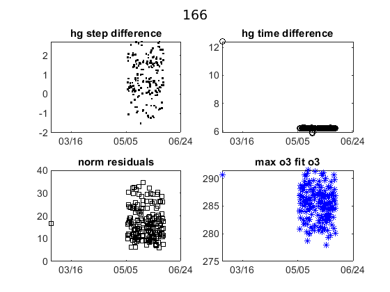 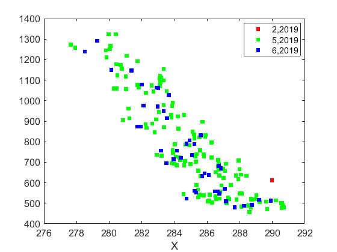 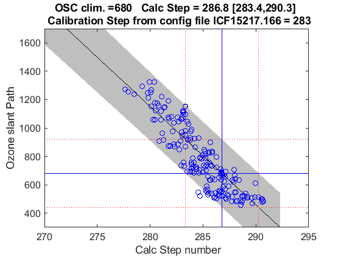
Sun_scan: Campaign
[cal_step{2},sc_avg{2},sc_raw{2},Args{2}]=sc_report(Cal.brw_str{Cal.n_inst},Cal.brw_config_files{Cal.n_inst,2},...
'date_range',datenum(Cal.Date.cal_year,1,Cal.calibration_days{Cal.n_inst,1}([1 end])),...
'CSN_orig',config_def(14),'OSC',Station.OSC,...
'control_flag',1,'residual_limit',35,...
'hg_time',15,'one_flag',1);
166
OK->B16819.166
OK->B17019.166
OK->B17119.166
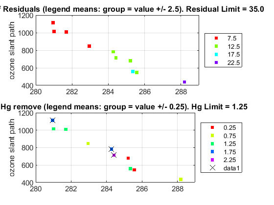 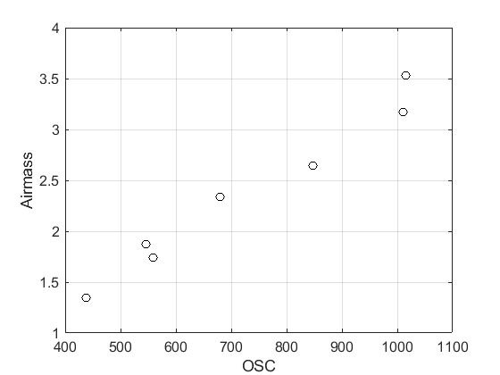

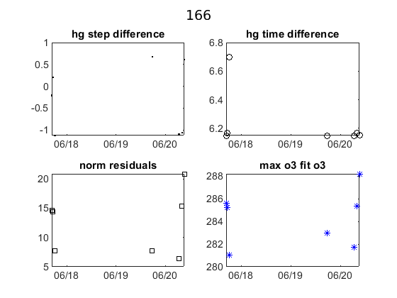 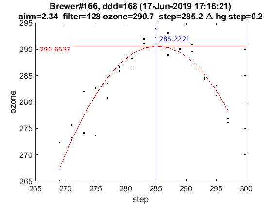 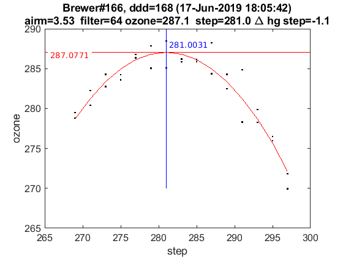 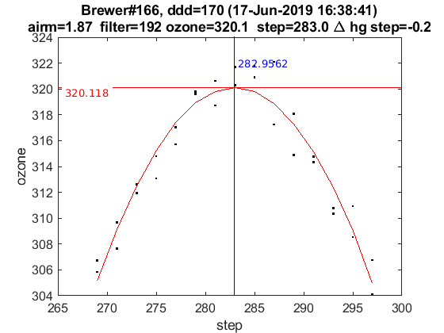 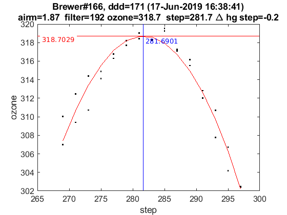 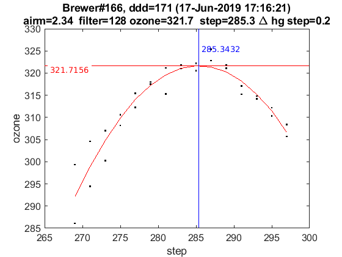 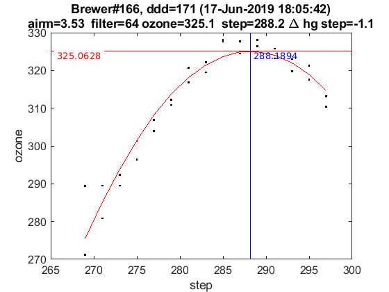 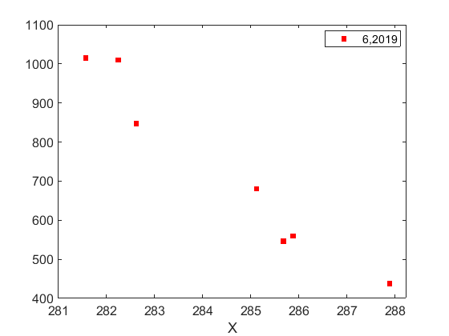 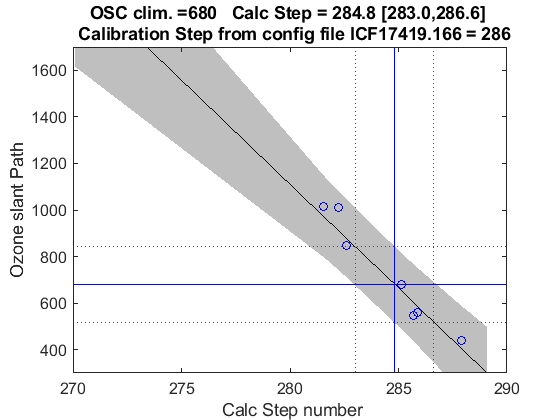
ix=sort(findobj('tag','SC_INDIVIDUAL')); figure(ix); set(get(gca,'title'),'FontSize',8);
printfiles_report(ix',Cal.dir_figs,'aux_pattern',ix,'FontSize',.9,'Width',8.5,'Height',7);
ix=sort(findobj('tag','Final_SC_Calculation'));
if length(ix)>1
Width=8; Height=6;
for i=1:length(ix), figure(ix(i)); set(get(gca,'title'),'FontSize',8); end
else
Width=13; Height=8;
end
printfiles_report(ix',Cal.dir_figs,'aux_pattern',ix,'Width',Width,'Height',Height);
close all
naux =
1
naux =
1
figura =
'166_figures_Final_SC_Calculation_1'
naux =
2
Definicion de variables: SC
if length(cal_step)>1
d_p=[length(cal_step)-1 length(cal_step)]; tags={'','new'};
else
d_p=1; tags={'new'};
end
idx=1; cal_step_error={};
for t=d_p
cal_step_error{t}=round(mean([abs(cal_step{t}(2)-cal_step{t}(3)),abs(cal_step{t}(2)-cal_step{t}(4))]));
latexcmd(fullfile(Cal.file_latex,['cal_wavelengthSC',tags{idx},'_',Cal.brw_str{Cal.n_inst}]),...
['\numSC',tags{idx}],size(sc_avg{t},1),...
['\CALCSTEP',tags{idx}],round(cal_step{t}(1)),...
['\calsteperror',tags{idx}],cal_step_error{t});
idx=idx+1;
end
load(Cal.file_save,'sunscan');sunscan{Cal.n_inst}.cal_step=cal_step;
sunscan{Cal.n_inst}.cal_step_error=cal_step_error;
sunscan{Cal.n_inst}.sc_avg=sc_avg; sunscan{Cal.n_inst}.sc_raw=sc_raw;
sunscan{Cal.n_inst}.info=Args;
save(Cal.file_save,'-APPEND','sunscan');
dsp calibration
res={}; detail={}; DSP_QUAD={}; QUAD_SUM={}; QUAD_DETAIL={};
CUBIC_SUM={}; CUBIC_DETAIL={}; salida={}; CSN_icf={};
l=dir(fullfile('DSP',[Cal.brw_str{Cal.n_inst},'*']));
ldsp=cellstr(cat(1,l.name));
ldsp=ldsp(end-3:end)
for jj=1:length(ldsp)
new calc_step
if jj==length(ldsp),confign=2; else confign=1; end
try
[res{jj},detail{jj},DSP_QUAD{jj},QUAD_SUM{jj},QUAD_DETAIL{jj},...
CUBIC_SUM{jj},CUBIC_DETAIL{jj},salida{jj},CSN_icf{jj},...
]=dspreport(Cal,'dsp_dir',fullfile('DSP',ldsp{jj}),'config_n',confign);
catch
warning(sprintf('Error en %s. DSP: %s',Cal.brw_name{Cal.n_inst},ldsp{jj}));
res{jj}=NaN*ones(15,9,2); detail{jj}=NaN*ones(7,6,15,2); QUAD_DETAIL{jj}=NaN;
end
datefile =
735400
now:W1016513.166
now:W3016513.166
now:W7016513.166
now:W8016513.166
now:W9016513.166
now:W11016513.166
now:W12016513.166
now:W1116513.166
now:W3116513.166
now:W7116513.166
now:W8116513.166
now:W9116513.166
now:W11116513.166
now:W12116513.166
now:W13116513.166
now:W3216513.166
now:W7216513.166
now:W8216513.166
now:W9216513.166
now:W11216513.166
now:W12216513.166
now:W13216513.166
now:W3316513.166
now:W7316513.166
now:W8316513.166
now:W9316513.166
now:W11316513.166
now:W12316513.166
now:W13316513.166
now:W7416513.166
now:W8416513.166
now:W9416513.166
now:W11416513.166
now:W12416513.166
now:W13416513.166
now:W7516513.166
now:W8516513.166
now:W9516513.166
now:W11516513.166
now:W12516513.166
now:W13516513.166
now:W14516513.166
lines_dsp_16513__166
saving alldsp to DSP/166_13_166/alldsp_16513_166.166
eliminamos la linea slit 3 3080.822000 -0.255353
eliminamos la linea slit 2 3499.952000 -0.364946
eliminamos la linea slit 5 3403.652000 0.132121
eliminamos la linea slit 4 3499.952000 -0.188400
eliminamos la linea slit 3 3499.952000 -0.177831
eliminamos la linea slit 2 3403.652000 -0.181716
eliminamos la linea slit 1 3403.652000 -0.154476
eliminamos la linea slit 5 3341.480000 0.124736
eliminamos la linea slit 2 3261.055000 0.134067
eliminamos la linea slit 1 3261.055000 0.121498
eliminamos la linea slit 2 2967.280000 -0.133499
saving normaldsp to DSP/166_13_166/dspnorm_16513_166.166 as brewer compatible file
Use polyval(pwl(2,:),wl) for calculating normal wavelengths
Saving ozonecoeffs to DSP/166_13_166/opos16513_166.166
278 WL(A) 3031.51 3062.55 3099.92 3134.58 3167.56 3199.51
Res(A) 11.25 11.14 10.86 11.08 10.94 10.78
O3abs(1/cm) 2.6133 1.7893 1.0072 0.6780 0.3748 0.2969 O3: 0.3482
Daumt O3abs(1/cm) 2.6203 1.7835 0.9993 0.6714 0.3681 0.2968 O3: 0.3583
So2abs(1/cm) 3.5339 5.4898 2.3494 1.9705 1.0472 0.6263
Bremen O3abs(1/cm) 2.6235 1.7870 1.0049 0.6811 0.3732 0.2980 O3: 0.3499
Nicolet 1e4*Rayabs(1/cm) 5053.5 4835.4 4588.4 4373.6 4181.0 4004.7 R: 11.3655
Bates(fix) 1e4*Rayabs(1/cm) 0.0 4870.0 4620.0 4410.0 4220.0 4040.0 R: -1.0000
Bodhaine 1e4*Rayabs(1/cm) 5050.0 4833.4 4587.9 4374.3 4182.6 4007.0 R: 10.9883
I0(mW m^-2nm^-1) 11712.74 9419.32 7397.12 4919.03 4069.50 3249.09 ETC: 1508
Ozone offset due to Rayleigh (RayCOeff/O3Coeff): -3.3 DU
Ozone offset due to Rayleigh (Bodhaine): -3.4 DU
Ratio Ozone for So2(A3)= 1.1650, So2/O3(A2)= 2.6573
O3 factor from Bass & Paur to Daumont = 0.9719
O3 factor from Bass & Paur to Bremen = 0.9953
279 WL(A) 3031.59 3062.62 3099.99 3134.65 3167.63 3199.58
Res(A) 11.25 11.14 10.86 11.08 10.94 10.78
O3abs(1/cm) 2.6105 1.7879 1.0070 0.6778 0.3748 0.2965 O3: 0.3475
Daumt O3abs(1/cm) 2.6176 1.7822 0.9989 0.6714 0.3680 0.2965 O3: 0.3576
So2abs(1/cm) 3.5149 5.5155 2.3560 1.9589 1.0484 0.6243
Bremen O3abs(1/cm) 2.6208 1.7856 1.0045 0.6810 0.3732 0.2977 O3: 0.3491
Nicolet 1e4*Rayabs(1/cm) 5053.0 4834.9 4588.0 4373.2 4180.6 4004.3 R: 11.3631
Bates(fix) 1e4*Rayabs(1/cm) 0.0 4870.0 4620.0 4410.0 4220.0 4040.0 R: -1.0000
Bodhaine 1e4*Rayabs(1/cm) 5049.5 4832.9 4587.5 4373.9 4182.2 4006.6 R: 10.9810
I0(mW m^-2nm^-1) 11706.47 9413.01 7371.82 4915.06 4059.39 3244.11 ETC: 1499
Ozone offset due to Rayleigh (RayCOeff/O3Coeff): -3.3 DU
Ozone offset due to Rayleigh (Bodhaine): -3.4 DU
Ratio Ozone for So2(A3)= 1.1624, So2/O3(A2)= 2.6753
O3 factor from Bass & Paur to Daumont = 0.9718
O3 factor from Bass & Paur to Bremen = 0.9953
280 WL(A) 3031.66 3062.70 3100.06 3134.72 3167.71 3199.65
Res(A) 11.25 11.14 10.86 11.08 10.94 10.78
O3abs(1/cm) 2.6077 1.7865 1.0067 0.6776 0.3748 0.2961 O3: 0.3467
Daumt O3abs(1/cm) 2.6148 1.7809 0.9986 0.6713 0.3680 0.2962 O3: 0.3568
So2abs(1/cm) 3.4960 5.5404 2.3627 1.9473 1.0497 0.6222
Bremen O3abs(1/cm) 2.6182 1.7841 1.0041 0.6808 0.3732 0.2974 O3: 0.3483
Nicolet 1e4*Rayabs(1/cm) 5052.4 4834.4 4587.5 4372.8 4180.2 4003.9 R: 11.3607
Bates(fix) 1e4*Rayabs(1/cm) 0.0 4870.0 4620.0 4410.0 4220.0 4040.0 R: -1.0000
Bodhaine 1e4*Rayabs(1/cm) 5049.0 4832.4 4587.0 4373.4 4181.8 4006.2 R: 10.9819
I0(mW m^-2nm^-1) 11700.21 9406.70 7346.67 4911.09 4049.31 3236.46 ETC: 1485
Ozone offset due to Rayleigh (RayCOeff/O3Coeff): -3.3 DU
Ozone offset due to Rayleigh (Bodhaine): -3.5 DU
Ratio Ozone for So2(A3)= 1.1597, So2/O3(A2)= 2.6927
O3 factor from Bass & Paur to Daumont = 0.9716
O3 factor from Bass & Paur to Bremen = 0.9953
281 WL(A) 3031.74 3062.77 3100.13 3134.79 3167.78 3199.72
Res(A) 11.25 11.14 10.86 11.08 10.94 10.78
O3abs(1/cm) 2.6052 1.7850 1.0064 0.6774 0.3749 0.2957 O3: 0.3457
Daumt O3abs(1/cm) 2.6121 1.7795 0.9982 0.6712 0.3680 0.2959 O3: 0.3560
So2abs(1/cm) 3.4777 5.5653 2.3695 1.9358 1.0510 0.6201
Bremen O3abs(1/cm) 2.6156 1.7826 1.0038 0.6807 0.3732 0.2971 O3: 0.3474
Nicolet 1e4*Rayabs(1/cm) 5051.9 4833.9 4587.1 4372.4 4179.8 4003.6 R: 11.3583
Bates(fix) 1e4*Rayabs(1/cm) 0.0 4870.0 4620.0 4410.0 4220.0 4040.0 R: -1.0000
Bodhaine 1e4*Rayabs(1/cm) 5048.4 4831.9 4586.6 4373.0 4181.4 4005.9 R: 10.9811
I0(mW m^-2nm^-1) 11693.96 9400.41 7321.66 4907.13 4039.24 3226.66 ETC: 1467
Ozone offset due to Rayleigh (RayCOeff/O3Coeff): -3.3 DU
Ozone offset due to Rayleigh (Bodhaine): -3.5 DU
Ratio Ozone for So2(A3)= 1.1568, So2/O3(A2)= 2.7106
O3 factor from Bass & Paur to Daumont = 0.9710
O3 factor from Bass & Paur to Bremen = 0.9949
282 WL(A) 3031.81 3062.84 3100.21 3134.86 3167.85 3199.79
Res(A) 11.25 11.14 10.86 11.08 10.94 10.78
O3abs(1/cm) 2.6026 1.7835 1.0061 0.6771 0.3749 0.2952 O3: 0.3446
Daumt O3abs(1/cm) 2.6095 1.7781 0.9978 0.6711 0.3680 0.2956 O3: 0.3551
So2abs(1/cm) 3.4610 5.5901 2.3766 1.9242 1.0522 0.6180
Bremen O3abs(1/cm) 2.6130 1.7812 1.0034 0.6805 0.3732 0.2967 O3: 0.3465
Nicolet 1e4*Rayabs(1/cm) 5051.4 4833.4 4586.6 4371.9 4179.4 4003.2 R: 11.3559
Bates(fix) 1e4*Rayabs(1/cm) 0.0 4870.0 4620.0 4410.0 4220.0 4040.0 R: -1.0000
Bodhaine 1e4*Rayabs(1/cm) 5047.9 4831.4 4586.1 4372.6 4181.0 4005.5 R: 10.9746
I0(mW m^-2nm^-1) 11687.72 9394.12 7296.79 4903.16 4029.20 3216.88 ETC: 1450
Ozone offset due to Rayleigh (RayCOeff/O3Coeff): -3.3 DU
Ozone offset due to Rayleigh (Bodhaine): -3.5 DU
Ratio Ozone for So2(A3)= 1.1537, So2/O3(A2)= 2.7290
O3 factor from Bass & Paur to Daumont = 0.9705
O3 factor from Bass & Paur to Bremen = 0.9945
283 WL(A) 3031.88 3062.92 3100.28 3134.94 3167.92 3199.85
Res(A) 11.25 11.14 10.86 11.08 10.94 10.78
O3abs(1/cm) 2.6001 1.7820 1.0058 0.6768 0.3749 0.2947 O3: 0.3436
Daumt O3abs(1/cm) 2.6069 1.7767 0.9975 0.6709 0.3680 0.2952 O3: 0.3542
So2abs(1/cm) 3.4444 5.6128 2.3840 1.9124 1.0535 0.6159
Bremen O3abs(1/cm) 2.6105 1.7797 1.0031 0.6803 0.3732 0.2964 O3: 0.3456
Nicolet 1e4*Rayabs(1/cm) 5050.8 4832.9 4586.1 4371.5 4179.0 4002.8 R: 11.3534
Bates(fix) 1e4*Rayabs(1/cm) 0.0 4870.0 4620.0 4410.0 4220.0 4040.0 R: -1.0000
Bodhaine 1e4*Rayabs(1/cm) 5047.4 4830.9 4585.7 4372.2 4180.6 4005.1 R: 10.9739
I0(mW m^-2nm^-1) 11681.49 9387.84 7272.06 4899.21 4019.19 3207.12 ETC: 1432
Ozone offset due to Rayleigh (RayCOeff/O3Coeff): -3.3 DU
Ozone offset due to Rayleigh (Bodhaine): -3.5 DU
Ratio Ozone for So2(A3)= 1.1505, So2/O3(A2)= 2.7457
O3 factor from Bass & Paur to Daumont = 0.9699
O3 factor from Bass & Paur to Bremen = 0.9941
284 WL(A) 3031.96 3062.99 3100.35 3135.01 3167.99 3199.92
Res(A) 11.25 11.14 10.86 11.08 10.94 10.78
O3abs(1/cm) 2.5975 1.7804 1.0055 0.6765 0.3750 0.2942 O3: 0.3425
Daumt O3abs(1/cm) 2.6043 1.7753 0.9972 0.6708 0.3681 0.2949 O3: 0.3533
So2abs(1/cm) 3.4282 5.6345 2.3915 1.9007 1.0547 0.6137
Bremen O3abs(1/cm) 2.6080 1.7781 1.0027 0.6801 0.3733 0.2960 O3: 0.3446
Nicolet 1e4*Rayabs(1/cm) 5050.3 4832.4 4585.7 4371.1 4178.6 4002.4 R: 11.3510
Bates(fix) 1e4*Rayabs(1/cm) 0.0 4870.0 4620.0 4410.0 4220.0 4040.0 R: -1.0000
Bodhaine 1e4*Rayabs(1/cm) 5046.9 4830.4 4585.2 4371.7 4180.2 4004.7 R: 10.9743
I0(mW m^-2nm^-1) 11675.27 9381.57 7247.47 4895.25 4009.19 3197.38 ETC: 1415
Ozone offset due to Rayleigh (RayCOeff/O3Coeff): -3.3 DU
Ozone offset due to Rayleigh (Bodhaine): -3.5 DU
Ratio Ozone for So2(A3)= 1.1471, So2/O3(A2)= 2.7621
O3 factor from Bass & Paur to Daumont = 0.9695
O3 factor from Bass & Paur to Bremen = 0.9939
285 WL(A) 3032.03 3063.06 3100.42 3135.08 3168.06 3199.99
Res(A) 11.25 11.14 10.86 11.08 10.94 10.78
O3abs(1/cm) 2.5948 1.7787 1.0052 0.6761 0.3750 0.2938 O3: 0.3415
Daumt O3abs(1/cm) 2.6017 1.7738 0.9968 0.6706 0.3681 0.2945 O3: 0.3523
So2abs(1/cm) 3.4124 5.6561 2.3990 1.8889 1.0559 0.6115
Bremen O3abs(1/cm) 2.6055 1.7766 1.0024 0.6798 0.3733 0.2956 O3: 0.3436
Nicolet 1e4*Rayabs(1/cm) 5049.8 4831.9 4585.2 4370.6 4178.2 4002.1 R: 11.3486
Bates(fix) 1e4*Rayabs(1/cm) 0.0 4870.0 4620.0 4410.0 4220.0 4040.0 R: -1.0000
Bodhaine 1e4*Rayabs(1/cm) 5046.3 4829.9 4584.7 4371.3 4179.8 4004.4 R: 10.9690
I0(mW m^-2nm^-1) 11669.06 9375.31 7223.02 4891.30 3999.22 3187.66 ETC: 1398
Ozone offset due to Rayleigh (RayCOeff/O3Coeff): -3.3 DU
Ozone offset due to Rayleigh (Bodhaine): -3.5 DU
Ratio Ozone for So2(A3)= 1.1436, So2/O3(A2)= 2.7788
O3 factor from Bass & Paur to Daumont = 0.9692
O3 factor from Bass & Paur to Bremen = 0.9937
286 WL(A) 3032.10 3063.14 3100.50 3135.15 3168.13 3200.06
Res(A) 11.25 11.14 10.86 11.08 10.94 10.78
O3abs(1/cm) 2.5921 1.7771 1.0049 0.6757 0.3751 0.2933 O3: 0.3405
Daumt O3abs(1/cm) 2.5992 1.7724 0.9965 0.6703 0.3682 0.2941 O3: 0.3513
So2abs(1/cm) 3.3983 5.6777 2.4069 1.8772 1.0571 0.6092
Bremen O3abs(1/cm) 2.6030 1.7750 1.0021 0.6796 0.3734 0.2952 O3: 0.3426
Nicolet 1e4*Rayabs(1/cm) 5049.2 4831.4 4584.8 4370.2 4177.8 4001.7 R: 11.3462
Bates(fix) 1e4*Rayabs(1/cm) 0.0 4870.0 4620.0 4410.0 4220.0 4040.0 R: -1.0000
Bodhaine 1e4*Rayabs(1/cm) 5045.8 4829.4 4584.3 4370.9 4179.4 4004.0 R: 10.9648
I0(mW m^-2nm^-1) 11662.85 9369.06 7207.13 4887.36 3989.27 3177.96 ETC: 1390
Ozone offset due to Rayleigh (RayCOeff/O3Coeff): -3.3 DU
Ozone offset due to Rayleigh (Bodhaine): -3.5 DU
Ratio Ozone for So2(A3)= 1.1402, So2/O3(A2)= 2.7952
O3 factor from Bass & Paur to Daumont = 0.9692
O3 factor from Bass & Paur to Bremen = 0.9938
287 WL(A) 3032.18 3063.21 3100.57 3135.22 3168.20 3200.13
Res(A) 11.25 11.14 10.86 11.08 10.94 10.78
O3abs(1/cm) 2.5896 1.7755 1.0047 0.6753 0.3752 0.2928 O3: 0.3394
Daumt O3abs(1/cm) 2.5966 1.7709 0.9961 0.6701 0.3682 0.2937 O3: 0.3502
So2abs(1/cm) 3.3842 5.6972 2.4152 1.8653 1.0583 0.6069
Bremen O3abs(1/cm) 2.6006 1.7735 1.0017 0.6793 0.3735 0.2948 O3: 0.3415
Nicolet 1e4*Rayabs(1/cm) 5048.7 4830.9 4584.3 4369.8 4177.4 4001.3 R: 11.3438
Bates(fix) 1e4*Rayabs(1/cm) 0.0 4870.0 4620.0 4410.0 4220.0 4040.0 R: -1.0000
Bodhaine 1e4*Rayabs(1/cm) 5045.3 4828.9 4583.8 4370.5 4179.0 4003.6 R: 10.9672
I0(mW m^-2nm^-1) 11656.65 9362.82 7192.61 4883.41 3979.34 3168.29 ETC: 1382
Ozone offset due to Rayleigh (RayCOeff/O3Coeff): -3.3 DU
Ozone offset due to Rayleigh (Bodhaine): -3.5 DU
Ratio Ozone for So2(A3)= 1.1368, So2/O3(A2)= 2.8099
O3 factor from Bass & Paur to Daumont = 0.9692
O3 factor from Bass & Paur to Bremen = 0.9939
288 WL(A) 3032.25 3063.28 3100.64 3135.29 3168.27 3200.20
Res(A) 11.25 11.14 10.86 11.08 10.93 10.78
O3abs(1/cm) 2.5873 1.7739 1.0044 0.6748 0.3753 0.2923 O3: 0.3382
Daumt O3abs(1/cm) 2.5942 1.7694 0.9958 0.6698 0.3683 0.2933 O3: 0.3491
So2abs(1/cm) 3.3706 5.7154 2.4234 1.8535 1.0595 0.6045
Bremen O3abs(1/cm) 2.5982 1.7718 1.0014 0.6790 0.3736 0.2943 O3: 0.3404
Nicolet 1e4*Rayabs(1/cm) 5048.2 4830.4 4583.8 4369.4 4177.0 4001.0 R: 11.3414
Bates(fix) 1e4*Rayabs(1/cm) 0.0 4870.0 4620.0 4410.0 4220.0 4040.0 R: -1.0000
Bodhaine 1e4*Rayabs(1/cm) 5044.7 4828.4 4583.4 4370.0 4178.6 4003.3 R: 10.9652
I0(mW m^-2nm^-1) 11650.47 9356.58 7178.49 4879.47 3969.44 3158.63 ETC: 1376
Ozone offset due to Rayleigh (RayCOeff/O3Coeff): -3.4 DU
Ozone offset due to Rayleigh (Bodhaine): -3.5 DU
Ratio Ozone for So2(A3)= 1.1330, So2/O3(A2)= 2.8244
O3 factor from Bass & Paur to Daumont = 0.9687
O3 factor from Bass & Paur to Bremen = 0.9936
saving powfiu7 to DSP/166_13_166/dsp_16513_166.166
freecoef =
4
freecoef =
9
freecoef =
9
freecoef =
9
freecoef =
9
freecoef =
9
freecoef =
9
freecoef =
9
freecoef =
9
freecoef =
9
saving data to file:DSP/166_13_166/dsp_16513_166.166
Use brstps2 to calculate steps and wavelengths
Saving ozonecoeffs to DSP/166_13_166/opos_pow7_16513_166.166
278 WL(A) 3031.65 3062.66 3100.10 3134.66 3167.62 3199.65
Res(A) 11.24 11.13 10.86 11.07 10.93 10.78
O3abs(1/cm) 2.6082 1.7872 1.0065 0.6779 0.3748 0.2961 O3: 0.3464
Daumt O3abs(1/cm) 2.6153 1.7816 0.9983 0.6714 0.3680 0.2962 O3: 0.3565
So2abs(1/cm) 3.4987 5.5292 2.3666 1.9578 1.0482 0.6222
Bremen O3abs(1/cm) 2.6186 1.7849 1.0039 0.6810 0.3732 0.2974 O3: 0.3480
Nicolet 1e4*Rayabs(1/cm) 5052.5 4834.6 4587.3 4373.2 4180.7 4003.9 R: 9.8837
Bates(fix) 1e4*Rayabs(1/cm) 0.0 4870.0 4620.0 4410.0 4220.0 4040.0 R: -1.0000
Bodhaine 1e4*Rayabs(1/cm) 5049.1 4832.6 4586.8 4373.8 4182.2 4006.2 R: 9.5091
I0(mW m^-2nm^-1) 11701.49 9409.81 7332.22 4914.58 4060.86 3236.37 ETC: 1443
Ozone offset due to Rayleigh (RayCOeff/O3Coeff): -2.9 DU
Ozone offset due to Rayleigh (Bodhaine): -3.0 DU
Ratio Ozone for So2(A3)= 1.1605, So2/O3(A2)= 2.6865
O3 factor from Bass & Paur to Daumont = 0.9716
O3 factor from Bass & Paur to Bremen = 0.9954
279 WL(A) 3031.72 3062.73 3100.18 3134.73 3167.69 3199.72
Res(A) 11.24 11.13 10.86 11.07 10.93 10.78
O3abs(1/cm) 2.6056 1.7858 1.0062 0.6777 0.3748 0.2957 O3: 0.3454
Daumt O3abs(1/cm) 2.6126 1.7802 0.9980 0.6713 0.3680 0.2959 O3: 0.3557
So2abs(1/cm) 3.4801 5.5541 2.3734 1.9462 1.0495 0.6201
Bremen O3abs(1/cm) 2.6160 1.7834 1.0036 0.6809 0.3732 0.2971 O3: 0.3472
Nicolet 1e4*Rayabs(1/cm) 5052.0 4834.1 4586.8 4372.7 4180.3 4003.6 R: 9.8813
Bates(fix) 1e4*Rayabs(1/cm) 0.0 4870.0 4620.0 4410.0 4220.0 4040.0 R: -1.0000
Bodhaine 1e4*Rayabs(1/cm) 5048.5 4832.1 4586.3 4373.4 4181.8 4005.9 R: 9.5123
I0(mW m^-2nm^-1) 11695.23 9403.51 7307.28 4910.60 4050.77 3226.57 ETC: 1425
Ozone offset due to Rayleigh (RayCOeff/O3Coeff): -2.9 DU
Ozone offset due to Rayleigh (Bodhaine): -3.0 DU
Ratio Ozone for So2(A3)= 1.1577, So2/O3(A2)= 2.7041
O3 factor from Bass & Paur to Daumont = 0.9711
O3 factor from Bass & Paur to Bremen = 0.9949
280 WL(A) 3031.80 3062.81 3100.25 3134.80 3167.77 3199.79
Res(A) 11.24 11.13 10.86 11.07 10.93 10.78
O3abs(1/cm) 2.6031 1.7843 1.0059 0.6774 0.3748 0.2952 O3: 0.3444
Daumt O3abs(1/cm) 2.6099 1.7788 0.9976 0.6712 0.3680 0.2956 O3: 0.3549
So2abs(1/cm) 3.4635 5.5790 2.3809 1.9346 1.0508 0.6180
Bremen O3abs(1/cm) 2.6135 1.7819 1.0032 0.6807 0.3732 0.2967 O3: 0.3463
Nicolet 1e4*Rayabs(1/cm) 5051.5 4833.6 4586.3 4372.3 4179.9 4003.2 R: 9.8789
Bates(fix) 1e4*Rayabs(1/cm) 0.0 4870.0 4620.0 4410.0 4220.0 4040.0 R: -1.0000
Bodhaine 1e4*Rayabs(1/cm) 5048.0 4831.6 4585.8 4373.0 4181.4 4005.5 R: 9.5080
I0(mW m^-2nm^-1) 11688.99 9397.21 7282.47 4906.63 4040.70 3216.78 ETC: 1408
Ozone offset due to Rayleigh (RayCOeff/O3Coeff): -2.9 DU
Ozone offset due to Rayleigh (Bodhaine): -3.1 DU
Ratio Ozone for So2(A3)= 1.1546, So2/O3(A2)= 2.7224
O3 factor from Bass & Paur to Daumont = 0.9704
O3 factor from Bass & Paur to Bremen = 0.9945
281 WL(A) 3031.87 3062.88 3100.32 3134.87 3167.84 3199.86
Res(A) 11.24 11.13 10.86 11.07 10.93 10.78
O3abs(1/cm) 2.6006 1.7828 1.0056 0.6771 0.3749 0.2947 O3: 0.3433
Daumt O3abs(1/cm) 2.6073 1.7774 0.9973 0.6711 0.3680 0.2952 O3: 0.3540
So2abs(1/cm) 3.4468 5.6031 2.3883 1.9231 1.0520 0.6159
Bremen O3abs(1/cm) 2.6109 1.7805 1.0029 0.6805 0.3732 0.2964 O3: 0.3454
Nicolet 1e4*Rayabs(1/cm) 5050.9 4833.1 4585.9 4371.9 4179.5 4002.8 R: 9.8765
Bates(fix) 1e4*Rayabs(1/cm) 0.0 4870.0 4620.0 4410.0 4220.0 4040.0 R: -1.0000
Bodhaine 1e4*Rayabs(1/cm) 5047.5 4831.1 4585.4 4372.6 4181.0 4005.1 R: 9.5005
I0(mW m^-2nm^-1) 11682.75 9390.92 7257.80 4902.66 4030.65 3207.02 ETC: 1391
Ozone offset due to Rayleigh (RayCOeff/O3Coeff): -2.9 DU
Ozone offset due to Rayleigh (Bodhaine): -3.1 DU
Ratio Ozone for So2(A3)= 1.1515, So2/O3(A2)= 2.7403
O3 factor from Bass & Paur to Daumont = 0.9699
O3 factor from Bass & Paur to Bremen = 0.9940
282 WL(A) 3031.94 3062.95 3100.39 3134.94 3167.91 3199.92
Res(A) 11.24 11.13 10.86 11.06 10.93 10.78
O3abs(1/cm) 2.5979 1.7813 1.0053 0.6769 0.3749 0.2942 O3: 0.3423
Daumt O3abs(1/cm) 2.6047 1.7760 0.9970 0.6710 0.3680 0.2949 O3: 0.3531
So2abs(1/cm) 3.4305 5.6248 2.3958 1.9113 1.0533 0.6137
Bremen O3abs(1/cm) 2.6084 1.7789 1.0025 0.6803 0.3732 0.2960 O3: 0.3444
Nicolet 1e4*Rayabs(1/cm) 5050.4 4832.6 4585.4 4371.5 4179.1 4002.4 R: 9.8741
Bates(fix) 1e4*Rayabs(1/cm) 0.0 4870.0 4620.0 4410.0 4220.0 4040.0 R: -1.0000
Bodhaine 1e4*Rayabs(1/cm) 5047.0 4830.6 4584.9 4372.1 4180.6 4004.7 R: 9.5028
I0(mW m^-2nm^-1) 11676.52 9384.63 7233.28 4898.69 4020.63 3197.28 ETC: 1374
Ozone offset due to Rayleigh (RayCOeff/O3Coeff): -2.9 DU
Ozone offset due to Rayleigh (Bodhaine): -3.1 DU
Ratio Ozone for So2(A3)= 1.1483, So2/O3(A2)= 2.7561
O3 factor from Bass & Paur to Daumont = 0.9694
O3 factor from Bass & Paur to Bremen = 0.9937
283 WL(A) 3032.02 3063.03 3100.47 3135.01 3167.98 3199.99
Res(A) 11.24 11.13 10.86 11.06 10.93 10.78
O3abs(1/cm) 2.5953 1.7796 1.0050 0.6765 0.3749 0.2938 O3: 0.3413
Daumt O3abs(1/cm) 2.6021 1.7746 0.9966 0.6708 0.3681 0.2945 O3: 0.3521
So2abs(1/cm) 3.4144 5.6465 2.4034 1.8995 1.0545 0.6115
Bremen O3abs(1/cm) 2.6059 1.7774 1.0022 0.6801 0.3733 0.2956 O3: 0.3434
Nicolet 1e4*Rayabs(1/cm) 5049.9 4832.1 4585.0 4371.0 4178.7 4002.1 R: 9.8716
Bates(fix) 1e4*Rayabs(1/cm) 0.0 4870.0 4620.0 4410.0 4220.0 4040.0 R: -1.0000
Bodhaine 1e4*Rayabs(1/cm) 5046.4 4830.1 4584.5 4371.7 4180.2 4004.4 R: 9.5022
I0(mW m^-2nm^-1) 11670.30 9378.36 7213.70 4894.73 4010.63 3187.55 ETC: 1362
Ozone offset due to Rayleigh (RayCOeff/O3Coeff): -2.9 DU
Ozone offset due to Rayleigh (Bodhaine): -3.1 DU
Ratio Ozone for So2(A3)= 1.1449, So2/O3(A2)= 2.7725
O3 factor from Bass & Paur to Daumont = 0.9693
O3 factor from Bass & Paur to Bremen = 0.9937
284 WL(A) 3032.09 3063.10 3100.54 3135.08 3168.05 3200.06
Res(A) 11.24 11.13 10.86 11.06 10.93 10.78
O3abs(1/cm) 2.5926 1.7779 1.0048 0.6761 0.3750 0.2933 O3: 0.3403
Daumt O3abs(1/cm) 2.5996 1.7732 0.9963 0.6706 0.3681 0.2941 O3: 0.3511
So2abs(1/cm) 3.4003 5.6683 2.4116 1.8878 1.0558 0.6092
Bremen O3abs(1/cm) 2.6035 1.7759 1.0019 0.6799 0.3733 0.2952 O3: 0.3424
Nicolet 1e4*Rayabs(1/cm) 5049.3 4831.6 4584.5 4370.6 4178.3 4001.7 R: 9.8692
Bates(fix) 1e4*Rayabs(1/cm) 0.0 4870.0 4620.0 4410.0 4220.0 4040.0 R: -1.0000
Bodhaine 1e4*Rayabs(1/cm) 5045.9 4829.6 4584.0 4371.3 4179.8 4004.0 R: 9.4955
I0(mW m^-2nm^-1) 11664.09 9372.10 7198.99 4890.77 4000.65 3177.85 ETC: 1355
Ozone offset due to Rayleigh (RayCOeff/O3Coeff): -2.9 DU
Ozone offset due to Rayleigh (Bodhaine): -3.1 DU
Ratio Ozone for So2(A3)= 1.1414, So2/O3(A2)= 2.7889
O3 factor from Bass & Paur to Daumont = 0.9692
O3 factor from Bass & Paur to Bremen = 0.9938
285 WL(A) 3032.16 3063.17 3100.61 3135.16 3168.12 3200.13
Res(A) 11.24 11.13 10.86 11.06 10.93 10.78
O3abs(1/cm) 2.5901 1.7763 1.0045 0.6757 0.3751 0.2928 O3: 0.3392
Daumt O3abs(1/cm) 2.5971 1.7717 0.9959 0.6704 0.3682 0.2937 O3: 0.3501
So2abs(1/cm) 3.3861 5.6893 2.4199 1.8761 1.0570 0.6069
Bremen O3abs(1/cm) 2.6010 1.7743 1.0015 0.6796 0.3734 0.2948 O3: 0.3413
Nicolet 1e4*Rayabs(1/cm) 5048.8 4831.1 4584.0 4370.2 4177.9 4001.3 R: 9.8668
Bates(fix) 1e4*Rayabs(1/cm) 0.0 4870.0 4620.0 4410.0 4220.0 4040.0 R: -1.0000
Bodhaine 1e4*Rayabs(1/cm) 5045.4 4829.1 4583.6 4370.8 4179.5 4003.6 R: 9.4935
I0(mW m^-2nm^-1) 11657.88 9365.84 7184.70 4886.81 3990.69 3168.17 ETC: 1348
Ozone offset due to Rayleigh (RayCOeff/O3Coeff): -2.9 DU
Ozone offset due to Rayleigh (Bodhaine): -3.1 DU
Ratio Ozone for So2(A3)= 1.1380, So2/O3(A2)= 2.8050
O3 factor from Bass & Paur to Daumont = 0.9690
O3 factor from Bass & Paur to Bremen = 0.9938
286 WL(A) 3032.24 3063.25 3100.68 3135.23 3168.19 3200.20
Res(A) 11.24 11.13 10.86 11.06 10.93 10.78
O3abs(1/cm) 2.5877 1.7747 1.0042 0.6753 0.3752 0.2923 O3: 0.3380
Daumt O3abs(1/cm) 2.5946 1.7702 0.9956 0.6701 0.3682 0.2933 O3: 0.3490
So2abs(1/cm) 3.3724 5.7075 2.4282 1.8643 1.0582 0.6045
Bremen O3abs(1/cm) 2.5986 1.7727 1.0012 0.6793 0.3735 0.2943 O3: 0.3402
Nicolet 1e4*Rayabs(1/cm) 5048.3 4830.6 4583.6 4369.7 4177.5 4001.0 R: 9.8644
Bates(fix) 1e4*Rayabs(1/cm) 0.0 4870.0 4620.0 4410.0 4220.0 4040.0 R: -1.0000
Bodhaine 1e4*Rayabs(1/cm) 5044.8 4828.7 4583.1 4370.4 4179.1 4003.3 R: 9.4958
I0(mW m^-2nm^-1) 11651.69 9359.60 7170.81 4882.86 3980.76 3158.51 ETC: 1341
Ozone offset due to Rayleigh (RayCOeff/O3Coeff): -2.9 DU
Ozone offset due to Rayleigh (Bodhaine): -3.1 DU
Ratio Ozone for So2(A3)= 1.1343, So2/O3(A2)= 2.8191
O3 factor from Bass & Paur to Daumont = 0.9686
O3 factor from Bass & Paur to Bremen = 0.9935
287 WL(A) 3032.31 3063.32 3100.75 3135.30 3168.26 3200.27
Res(A) 11.24 11.13 10.86 11.06 10.93 10.78
O3abs(1/cm) 2.5854 1.7731 1.0039 0.6749 0.3752 0.2917 O3: 0.3367
Daumt O3abs(1/cm) 2.5921 1.7687 0.9952 0.6698 0.3683 0.2928 O3: 0.3478
So2abs(1/cm) 3.3591 5.7258 2.4365 1.8524 1.0593 0.6021
Bremen O3abs(1/cm) 2.5962 1.7711 1.0008 0.6790 0.3736 0.2938 O3: 0.3391
Nicolet 1e4*Rayabs(1/cm) 5047.7 4830.1 4583.1 4369.3 4177.1 4000.6 R: 9.8620
Bates(fix) 1e4*Rayabs(1/cm) 0.0 4870.0 4620.0 4410.0 4220.0 4040.0 R: -1.0000
Bodhaine 1e4*Rayabs(1/cm) 5044.3 4828.2 4582.6 4370.0 4178.7 4002.9 R: 9.4914
I0(mW m^-2nm^-1) 11645.50 9353.36 7155.02 4878.91 3970.85 3148.88 ETC: 1333
Ozone offset due to Rayleigh (RayCOeff/O3Coeff): -2.9 DU
Ozone offset due to Rayleigh (Bodhaine): -3.1 DU
Ratio Ozone for So2(A3)= 1.1304, So2/O3(A2)= 2.8339
O3 factor from Bass & Paur to Daumont = 0.9680
O3 factor from Bass & Paur to Bremen = 0.9930
288 WL(A) 3032.39 3063.39 3100.83 3135.37 3168.33 3200.34
Res(A) 11.24 11.12 10.86 11.06 10.93 10.78
O3abs(1/cm) 2.5830 1.7715 1.0035 0.6744 0.3753 0.2910 O3: 0.3354
Daumt O3abs(1/cm) 2.5897 1.7672 0.9949 0.6695 0.3684 0.2923 O3: 0.3466
So2abs(1/cm) 3.3474 5.7440 2.4455 1.8406 1.0605 0.5997
Bremen O3abs(1/cm) 2.5939 1.7695 1.0005 0.6786 0.3737 0.2934 O3: 0.3379
Nicolet 1e4*Rayabs(1/cm) 5047.2 4829.6 4582.6 4368.9 4176.7 4000.2 R: 9.8596
Bates(fix) 1e4*Rayabs(1/cm) 0.0 4870.0 4620.0 4410.0 4220.0 4040.0 R: -1.0000
Bodhaine 1e4*Rayabs(1/cm) 5043.8 4827.7 4582.2 4369.6 4178.3 4002.5 R: 9.4843
I0(mW m^-2nm^-1) 11639.32 9347.13 7138.25 4874.96 3960.96 3139.26 ETC: 1323
Ozone offset due to Rayleigh (RayCOeff/O3Coeff): -2.9 DU
Ozone offset due to Rayleigh (Bodhaine): -3.1 DU
Ratio Ozone for So2(A3)= 1.1264, So2/O3(A2)= 2.8488
O3 factor from Bass & Paur to Daumont = 0.9675
O3 factor from Bass & Paur to Bremen = 0.9927
Warning: The EraseMode property is no longer supported and will error
in a future release.
Warning: The EraseMode property is no longer supported and will error
in a future release.
Warning: The EraseMode property is no longer supported and will error
in a future release.
Warning: The EraseMode property is no longer supported and will error
in a future release.
Warning: The EraseMode property is no longer supported and will error
in a future release.
Warning: The EraseMode property is no longer supported and will error
in a future release.
Warning: The EraseMode property is no longer supported and will error
in a future release.
Warning: The EraseMode property is no longer supported and will error
in a future release.
Warning: The EraseMode property is no longer supported and will error
in a future release.
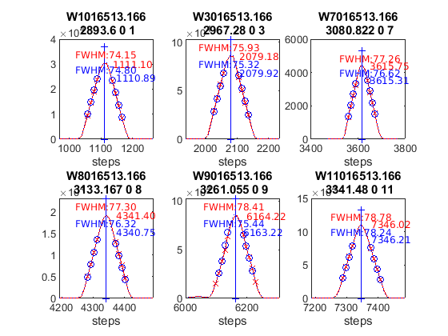 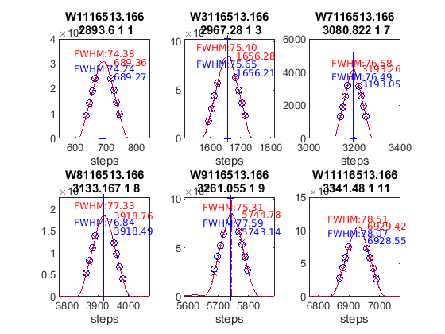 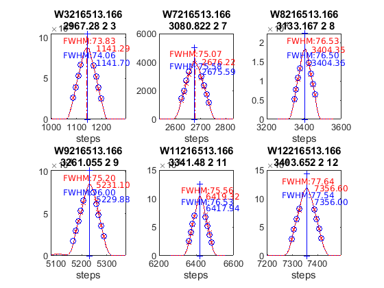 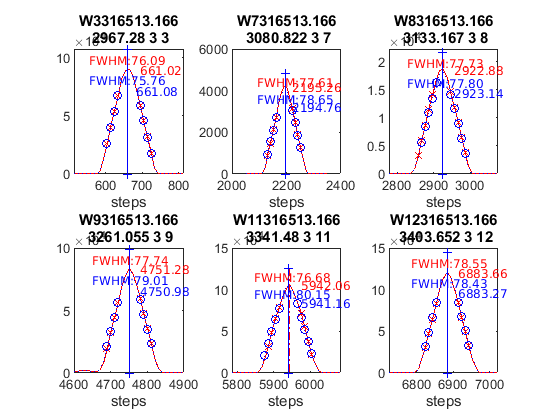 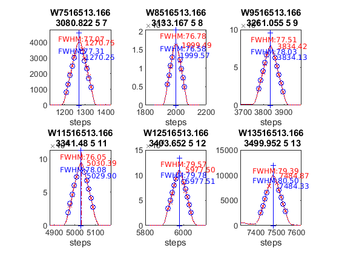 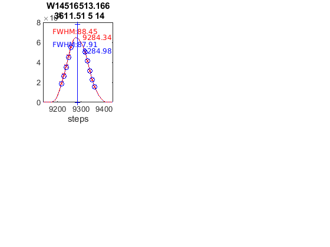 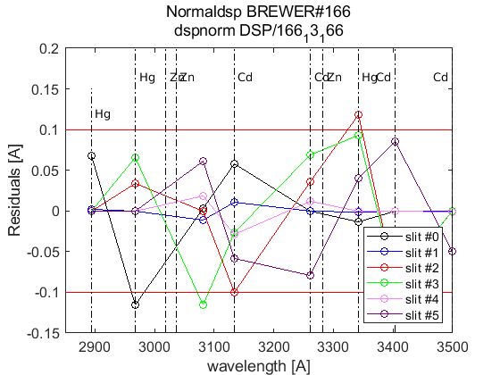 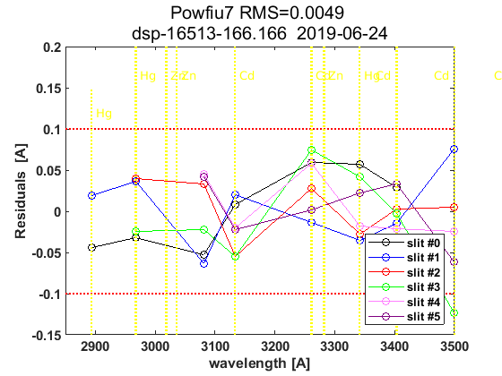 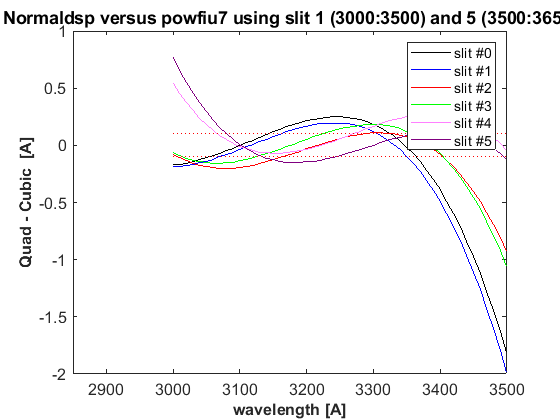 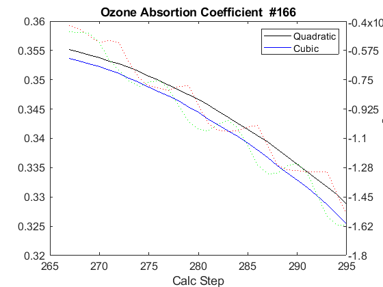
datefile =
736116
now:W1015215.166
now:W3015215.166
now:W7015215.166
now:W8015215.166
now:W9015215.166
now:W11015215.166
now:W12015215.166
now:W1115215.166
now:W3115215.166
now:W7115215.166
now:W8115215.166
now:W9115215.166
now:W11115215.166
now:W12115215.166
now:W13115215.166
now:W3215215.166
now:W7215215.166
now:W8215215.166
now:W9215215.166
now:W11215215.166
now:W12215215.166
now:W13215215.166
now:W3315215.166
now:W7315215.166
now:W8315215.166
now:W9315215.166
now:W11315215.166
now:W12315215.166
now:W13315215.166
now:W7415215.166
now:W8415215.166
now:W9415215.166
now:W11415215.166
now:W12415215.166
now:W13415215.166
now:W7515215.166
now:W8515215.166
now:W9515215.166
now:W11515215.166
now:W12515215.166
now:W13515215.166
now:W14515215.166
lines_dsp_15115__166
saving alldsp to DSP/166_15_152/alldsp_15115_166.166
eliminamos la linea slit 4 3499.952000 -0.277664
eliminamos la linea slit 3 3499.952000 -0.266242
eliminamos la linea slit 2 3499.952000 -0.407118
eliminamos la linea slit 1 3341.480000 0.260912
eliminamos la linea slit 6 3403.652000 0.133372
eliminamos la linea slit 5 3403.652000 0.156470
eliminamos la linea slit 4 3403.652000 -0.137711
eliminamos la linea slit 3 3403.652000 -0.173389
eliminamos la linea slit 2 3403.652000 -0.191644
eliminamos la linea slit 1 3261.055000 0.249630
eliminamos la linea slit 6 3341.480000 0.148514
eliminamos la linea slit 5 3341.480000 0.163210
eliminamos la linea slit 2 3261.055000 0.131953
saving normaldsp to DSP/166_15_152/dspnorm_15115_166.166 as brewer compatible file
Use polyval(pwl(2,:),wl) for calculating normal wavelengths
Saving ozonecoeffs to DSP/166_15_152/opos15115_166.166
278 WL(A) 3031.42 3062.56 3100.08 3134.65 3167.58 3199.56
Res(A) 11.22 11.14 10.89 11.15 10.92 10.77
O3abs(1/cm) 2.6169 1.7891 1.0066 0.6776 0.3748 0.2966 O3: 0.3475
Daumt O3abs(1/cm) 2.6237 1.7833 0.9985 0.6712 0.3680 0.2966 O3: 0.3574
So2abs(1/cm) 3.5564 5.4947 2.3645 1.9581 1.0475 0.6249
Bremen O3abs(1/cm) 2.6267 1.7867 1.0041 0.6808 0.3732 0.2978 O3: 0.3490
Nicolet 1e4*Rayabs(1/cm) 5054.2 4835.3 4587.4 4373.2 4180.9 4004.4 R: 10.3317
Bates(fix) 1e4*Rayabs(1/cm) 0.0 4870.0 4620.0 4410.0 4220.0 4040.0 R: -1.0000
Bodhaine 1e4*Rayabs(1/cm) 5050.7 4833.3 4586.9 4373.9 4182.5 4006.7 R: 9.9585
I0(mW m^-2nm^-1) 11721.13 9418.24 7340.42 4915.11 4067.08 3245.08 ETC: 1452
Ozone offset due to Rayleigh (RayCOeff/O3Coeff): -3.0 DU
Ozone offset due to Rayleigh (Bodhaine): -3.2 DU
Ratio Ozone for So2(A3)= 1.1641, So2/O3(A2)= 2.6587
O3 factor from Bass & Paur to Daumont = 0.9723
O3 factor from Bass & Paur to Bremen = 0.9958
279 WL(A) 3031.49 3062.64 3100.15 3134.72 3167.65 3199.63
Res(A) 11.22 11.14 10.89 11.15 10.92 10.77
O3abs(1/cm) 2.6140 1.7876 1.0063 0.6774 0.3748 0.2963 O3: 0.3467
Daumt O3abs(1/cm) 2.6209 1.7820 0.9981 0.6711 0.3680 0.2963 O3: 0.3567
So2abs(1/cm) 3.5372 5.5199 2.3712 1.9467 1.0487 0.6229
Bremen O3abs(1/cm) 2.6241 1.7853 1.0037 0.6807 0.3732 0.2975 O3: 0.3482
Nicolet 1e4*Rayabs(1/cm) 5053.6 4834.8 4587.0 4372.8 4180.5 4004.0 R: 10.3283
Bates(fix) 1e4*Rayabs(1/cm) 0.0 4870.0 4620.0 4410.0 4220.0 4040.0 R: -1.0000
Bodhaine 1e4*Rayabs(1/cm) 5050.2 4832.8 4586.5 4373.4 4182.1 4006.3 R: 9.9550
I0(mW m^-2nm^-1) 11714.81 9411.92 7315.62 4911.20 4056.94 3239.20 ETC: 1441
Ozone offset due to Rayleigh (RayCOeff/O3Coeff): -3.0 DU
Ozone offset due to Rayleigh (Bodhaine): -3.2 DU
Ratio Ozone for So2(A3)= 1.1615, So2/O3(A2)= 2.6762
O3 factor from Bass & Paur to Daumont = 0.9719
O3 factor from Bass & Paur to Bremen = 0.9956
280 WL(A) 3031.57 3062.71 3100.22 3134.80 3167.72 3199.70
Res(A) 11.22 11.14 10.89 11.15 10.92 10.77
O3abs(1/cm) 2.6111 1.7862 1.0060 0.6772 0.3748 0.2958 O3: 0.3457
Daumt O3abs(1/cm) 2.6182 1.7806 0.9978 0.6710 0.3680 0.2960 O3: 0.3559
So2abs(1/cm) 3.5180 5.5448 2.3786 1.9352 1.0500 0.6208
Bremen O3abs(1/cm) 2.6214 1.7839 1.0034 0.6805 0.3732 0.2972 O3: 0.3474
Nicolet 1e4*Rayabs(1/cm) 5053.1 4834.3 4586.5 4372.3 4180.1 4003.7 R: 10.3250
Bates(fix) 1e4*Rayabs(1/cm) 0.0 4870.0 4620.0 4410.0 4220.0 4040.0 R: -1.0000
Bodhaine 1e4*Rayabs(1/cm) 5049.6 4832.3 4586.0 4373.0 4181.7 4006.0 R: 9.9498
I0(mW m^-2nm^-1) 11708.50 9405.61 7290.96 4907.30 4046.83 3229.35 ETC: 1424
Ozone offset due to Rayleigh (RayCOeff/O3Coeff): -3.0 DU
Ozone offset due to Rayleigh (Bodhaine): -3.2 DU
Ratio Ozone for So2(A3)= 1.1587, So2/O3(A2)= 2.6938
O3 factor from Bass & Paur to Daumont = 0.9714
O3 factor from Bass & Paur to Bremen = 0.9953
281 WL(A) 3031.64 3062.78 3100.29 3134.87 3167.79 3199.77
Res(A) 11.22 11.14 10.89 11.15 10.92 10.77
O3abs(1/cm) 2.6083 1.7848 1.0057 0.6769 0.3748 0.2954 O3: 0.3447
Daumt O3abs(1/cm) 2.6154 1.7793 0.9974 0.6709 0.3680 0.2957 O3: 0.3551
So2abs(1/cm) 3.4989 5.5697 2.3860 1.9234 1.0513 0.6187
Bremen O3abs(1/cm) 2.6188 1.7824 1.0030 0.6803 0.3732 0.2968 O3: 0.3465
Nicolet 1e4*Rayabs(1/cm) 5052.6 4833.8 4586.1 4371.9 4179.7 4003.3 R: 10.3217
Bates(fix) 1e4*Rayabs(1/cm) 0.0 4870.0 4620.0 4410.0 4220.0 4040.0 R: -1.0000
Bodhaine 1e4*Rayabs(1/cm) 5049.1 4831.8 4585.6 4372.6 4181.3 4005.6 R: 9.9482
I0(mW m^-2nm^-1) 11702.20 9399.32 7266.43 4903.40 4036.75 3219.53 ETC: 1407
Ozone offset due to Rayleigh (RayCOeff/O3Coeff): -3.0 DU
Ozone offset due to Rayleigh (Bodhaine): -3.2 DU
Ratio Ozone for So2(A3)= 1.1556, So2/O3(A2)= 2.7121
O3 factor from Bass & Paur to Daumont = 0.9708
O3 factor from Bass & Paur to Bremen = 0.9948
282 WL(A) 3031.72 3062.86 3100.36 3134.94 3167.86 3199.84
Res(A) 11.22 11.14 10.89 11.15 10.92 10.77
O3abs(1/cm) 2.6058 1.7833 1.0054 0.6766 0.3749 0.2949 O3: 0.3437
Daumt O3abs(1/cm) 2.6127 1.7779 0.9971 0.6707 0.3680 0.2953 O3: 0.3542
So2abs(1/cm) 3.4803 5.5945 2.3934 1.9117 1.0525 0.6165
Bremen O3abs(1/cm) 2.6162 1.7809 1.0027 0.6801 0.3732 0.2965 O3: 0.3456
Nicolet 1e4*Rayabs(1/cm) 5052.0 4833.3 4585.6 4371.5 4179.3 4002.9 R: 10.3183
Bates(fix) 1e4*Rayabs(1/cm) 0.0 4870.0 4620.0 4410.0 4220.0 4040.0 R: -1.0000
Bodhaine 1e4*Rayabs(1/cm) 5048.6 4831.3 4585.1 4372.1 4180.9 4005.2 R: 9.9470
I0(mW m^-2nm^-1) 11695.91 9393.03 7242.04 4899.50 4026.68 3209.72 ETC: 1390
Ozone offset due to Rayleigh (RayCOeff/O3Coeff): -3.0 DU
Ozone offset due to Rayleigh (Bodhaine): -3.2 DU
Ratio Ozone for So2(A3)= 1.1525, So2/O3(A2)= 2.7304
O3 factor from Bass & Paur to Daumont = 0.9702
O3 factor from Bass & Paur to Bremen = 0.9944
283 WL(A) 3031.79 3062.93 3100.44 3135.01 3167.93 3199.91
Res(A) 11.22 11.14 10.89 11.14 10.92 10.77
O3abs(1/cm) 2.6032 1.7818 1.0051 0.6763 0.3749 0.2944 O3: 0.3427
Daumt O3abs(1/cm) 2.6101 1.7765 0.9967 0.6706 0.3680 0.2950 O3: 0.3533
So2abs(1/cm) 3.4636 5.6167 2.4009 1.9001 1.0538 0.6143
Bremen O3abs(1/cm) 2.6136 1.7794 1.0023 0.6799 0.3732 0.2961 O3: 0.3447
Nicolet 1e4*Rayabs(1/cm) 5051.5 4832.8 4585.1 4371.1 4178.9 4002.6 R: 10.3150
Bates(fix) 1e4*Rayabs(1/cm) 0.0 4870.0 4620.0 4410.0 4220.0 4040.0 R: -1.0000
Bodhaine 1e4*Rayabs(1/cm) 5048.0 4830.8 4584.7 4371.7 4180.5 4004.8 R: 9.9402
I0(mW m^-2nm^-1) 11689.63 9386.75 7217.79 4895.61 4016.64 3199.94 ETC: 1373
Ozone offset due to Rayleigh (RayCOeff/O3Coeff): -3.0 DU
Ozone offset due to Rayleigh (Bodhaine): -3.2 DU
Ratio Ozone for So2(A3)= 1.1493, So2/O3(A2)= 2.7466
O3 factor from Bass & Paur to Daumont = 0.9699
O3 factor from Bass & Paur to Bremen = 0.9942
284 WL(A) 3031.86 3063.00 3100.51 3135.08 3168.00 3199.97
Res(A) 11.22 11.14 10.89 11.14 10.92 10.77
O3abs(1/cm) 2.6007 1.7801 1.0048 0.6759 0.3750 0.2939 O3: 0.3417
Daumt O3abs(1/cm) 2.6074 1.7750 0.9964 0.6704 0.3681 0.2946 O3: 0.3523
So2abs(1/cm) 3.4469 5.6384 2.4090 1.8885 1.0550 0.6121
Bremen O3abs(1/cm) 2.6111 1.7779 1.0020 0.6797 0.3733 0.2957 O3: 0.3437
Nicolet 1e4*Rayabs(1/cm) 5051.0 4832.3 4584.7 4370.6 4178.5 4002.2 R: 10.3117
Bates(fix) 1e4*Rayabs(1/cm) 0.0 4870.0 4620.0 4410.0 4220.0 4040.0 R: -1.0000
Bodhaine 1e4*Rayabs(1/cm) 5047.5 4830.3 4584.2 4371.3 4180.1 4004.5 R: 9.9373
I0(mW m^-2nm^-1) 11683.36 9380.47 7201.86 4891.71 4006.62 3190.17 ETC: 1365
Ozone offset due to Rayleigh (RayCOeff/O3Coeff): -3.0 DU
Ozone offset due to Rayleigh (Bodhaine): -3.2 DU
Ratio Ozone for So2(A3)= 1.1458, So2/O3(A2)= 2.7631
O3 factor from Bass & Paur to Daumont = 0.9697
O3 factor from Bass & Paur to Bremen = 0.9941
285 WL(A) 3031.94 3063.08 3100.58 3135.15 3168.07 3200.04
Res(A) 11.22 11.14 10.89 11.14 10.92 10.77
O3abs(1/cm) 2.5981 1.7784 1.0046 0.6755 0.3750 0.2935 O3: 0.3406
Daumt O3abs(1/cm) 2.6048 1.7736 0.9961 0.6701 0.3681 0.2942 O3: 0.3513
So2abs(1/cm) 3.4303 5.6601 2.4173 1.8766 1.0563 0.6099
Bremen O3abs(1/cm) 2.6085 1.7763 1.0016 0.6794 0.3733 0.2953 O3: 0.3427
Nicolet 1e4*Rayabs(1/cm) 5050.4 4831.8 4584.2 4370.2 4178.1 4001.8 R: 10.3084
Bates(fix) 1e4*Rayabs(1/cm) 0.0 4870.0 4620.0 4410.0 4220.0 4040.0 R: -1.0000
Bodhaine 1e4*Rayabs(1/cm) 5047.0 4829.8 4583.7 4370.9 4179.7 4004.1 R: 9.9367
I0(mW m^-2nm^-1) 11677.10 9374.21 7187.51 4887.83 3996.63 3180.43 ETC: 1358
Ozone offset due to Rayleigh (RayCOeff/O3Coeff): -3.0 DU
Ozone offset due to Rayleigh (Bodhaine): -3.2 DU
Ratio Ozone for So2(A3)= 1.1423, So2/O3(A2)= 2.7797
O3 factor from Bass & Paur to Daumont = 0.9695
O3 factor from Bass & Paur to Bremen = 0.9941
286 WL(A) 3032.01 3063.15 3100.65 3135.22 3168.14 3200.11
Res(A) 11.21 11.14 10.89 11.14 10.92 10.77
O3abs(1/cm) 2.5954 1.7768 1.0043 0.6751 0.3751 0.2930 O3: 0.3396
Daumt O3abs(1/cm) 2.6023 1.7721 0.9957 0.6699 0.3682 0.2938 O3: 0.3503
So2abs(1/cm) 3.4143 5.6815 2.4255 1.8648 1.0574 0.6076
Bremen O3abs(1/cm) 2.6060 1.7748 1.0013 0.6791 0.3734 0.2949 O3: 0.3416
Nicolet 1e4*Rayabs(1/cm) 5049.9 4831.3 4583.8 4369.8 4177.7 4001.4 R: 10.3050
Bates(fix) 1e4*Rayabs(1/cm) 0.0 4870.0 4620.0 4410.0 4220.0 4040.0 R: -1.0000
Bodhaine 1e4*Rayabs(1/cm) 5046.5 4829.3 4583.3 4370.4 4179.3 4003.7 R: 9.9322
I0(mW m^-2nm^-1) 11670.84 9367.96 7173.57 4883.94 3986.66 3170.71 ETC: 1351
Ozone offset due to Rayleigh (RayCOeff/O3Coeff): -3.0 DU
Ozone offset due to Rayleigh (Bodhaine): -3.2 DU
Ratio Ozone for So2(A3)= 1.1389, So2/O3(A2)= 2.7960
O3 factor from Bass & Paur to Daumont = 0.9694
O3 factor from Bass & Paur to Bremen = 0.9941
287 WL(A) 3032.09 3063.22 3100.73 3135.30 3168.22 3200.18
Res(A) 11.21 11.14 10.89 11.14 10.92 10.77
O3abs(1/cm) 2.5927 1.7752 1.0040 0.6746 0.3752 0.2924 O3: 0.3384
Daumt O3abs(1/cm) 2.5997 1.7706 0.9954 0.6696 0.3682 0.2934 O3: 0.3492
So2abs(1/cm) 3.4001 5.7006 2.4338 1.8531 1.0586 0.6052
Bremen O3abs(1/cm) 2.6036 1.7732 1.0010 0.6788 0.3735 0.2945 O3: 0.3405
Nicolet 1e4*Rayabs(1/cm) 5049.4 4830.8 4583.3 4369.3 4177.3 4001.1 R: 10.3017
Bates(fix) 1e4*Rayabs(1/cm) 0.0 4870.0 4620.0 4410.0 4220.0 4040.0 R: -1.0000
Bodhaine 1e4*Rayabs(1/cm) 5045.9 4828.8 4582.8 4370.0 4178.9 4003.4 R: 9.9260
I0(mW m^-2nm^-1) 11664.60 9361.71 7159.18 4880.06 3976.71 3161.01 ETC: 1344
Ozone offset due to Rayleigh (RayCOeff/O3Coeff): -3.0 DU
Ozone offset due to Rayleigh (Bodhaine): -3.2 DU
Ratio Ozone for So2(A3)= 1.1353, So2/O3(A2)= 2.8107
O3 factor from Bass & Paur to Daumont = 0.9690
O3 factor from Bass & Paur to Bremen = 0.9939
288 WL(A) 3032.16 3063.30 3100.80 3135.37 3168.29 3200.25
Res(A) 11.21 11.14 10.89 11.14 10.92 10.77
O3abs(1/cm) 2.5902 1.7736 1.0036 0.6742 0.3753 0.2918 O3: 0.3371
Daumt O3abs(1/cm) 2.5972 1.7691 0.9950 0.6693 0.3683 0.2930 O3: 0.3481
So2abs(1/cm) 3.3859 5.7188 2.4426 1.8414 1.0598 0.6028
Bremen O3abs(1/cm) 2.6011 1.7716 1.0006 0.6784 0.3736 0.2940 O3: 0.3393
Nicolet 1e4*Rayabs(1/cm) 5048.8 4830.3 4582.8 4368.9 4176.9 4000.7 R: 10.2984
Bates(fix) 1e4*Rayabs(1/cm) 0.0 4870.0 4620.0 4410.0 4220.0 4040.0 R: -1.0000
Bodhaine 1e4*Rayabs(1/cm) 5045.4 4828.3 4582.4 4369.6 4178.5 4003.0 R: 9.9266
I0(mW m^-2nm^-1) 11658.36 9355.48 7142.47 4876.18 3966.78 3151.33 ETC: 1335
Ozone offset due to Rayleigh (RayCOeff/O3Coeff): -3.1 DU
Ozone offset due to Rayleigh (Bodhaine): -3.2 DU
Ratio Ozone for So2(A3)= 1.1313, So2/O3(A2)= 2.8254
O3 factor from Bass & Paur to Daumont = 0.9684
O3 factor from Bass & Paur to Bremen = 0.9934
saving powfiu7 to DSP/166_15_152/dsp_15115_166.166
freecoef =
4
freecoef =
9
freecoef =
9
freecoef =
9
freecoef =
9
freecoef =
9
freecoef =
9
freecoef =
9
freecoef =
9
freecoef =
9
saving data to file:DSP/166_15_152/dsp_15115_166.166
Use brstps2 to calculate steps and wavelengths
Saving ozonecoeffs to DSP/166_15_152/opos_pow7_15115_166.166
278 WL(A) 3031.60 3062.63 3100.10 3134.65 3167.65 3199.65
Res(A) 11.20 11.12 10.88 11.13 10.92 10.76
O3abs(1/cm) 2.6098 1.7878 1.0065 0.6777 0.3748 0.2962 O3: 0.3466
Daumt O3abs(1/cm) 2.6169 1.7821 0.9984 0.6713 0.3680 0.2962 O3: 0.3567
So2abs(1/cm) 3.5088 5.5193 2.3666 1.9583 1.0486 0.6224
Bremen O3abs(1/cm) 2.6202 1.7855 1.0040 0.6808 0.3732 0.2974 O3: 0.3482
Nicolet 1e4*Rayabs(1/cm) 5052.9 4834.8 4587.3 4373.2 4180.5 4003.9 R: 10.1749
Bates(fix) 1e4*Rayabs(1/cm) 0.0 4870.0 4620.0 4410.0 4220.0 4040.0 R: -1.0000
Bodhaine 1e4*Rayabs(1/cm) 5049.4 4832.8 4586.8 4373.9 4182.1 4006.2 R: 9.8009
I0(mW m^-2nm^-1) 11706.08 9412.38 7332.17 4915.10 4057.65 3236.60 ETC: 1450
Ozone offset due to Rayleigh (RayCOeff/O3Coeff): -2.9 DU
Ozone offset due to Rayleigh (Bodhaine): -3.1 DU
Ratio Ozone for So2(A3)= 1.1614, So2/O3(A2)= 2.6749
O3 factor from Bass & Paur to Daumont = 0.9716
O3 factor from Bass & Paur to Bremen = 0.9953
279 WL(A) 3031.67 3062.70 3100.17 3134.72 3167.72 3199.71
Res(A) 11.20 11.12 10.88 11.13 10.92 10.76
O3abs(1/cm) 2.6072 1.7864 1.0062 0.6775 0.3748 0.2957 O3: 0.3456
Daumt O3abs(1/cm) 2.6142 1.7808 0.9980 0.6712 0.3680 0.2959 O3: 0.3559
So2abs(1/cm) 3.4897 5.5443 2.3735 1.9469 1.0499 0.6202
Bremen O3abs(1/cm) 2.6176 1.7840 1.0036 0.6807 0.3732 0.2971 O3: 0.3474
Nicolet 1e4*Rayabs(1/cm) 5052.4 4834.3 4586.8 4372.8 4180.1 4003.6 R: 10.1724
Bates(fix) 1e4*Rayabs(1/cm) 0.0 4870.0 4620.0 4410.0 4220.0 4040.0 R: -1.0000
Bodhaine 1e4*Rayabs(1/cm) 5048.9 4832.3 4586.3 4373.4 4181.7 4005.9 R: 9.7997
I0(mW m^-2nm^-1) 11699.77 9406.06 7307.36 4911.18 4047.54 3226.74 ETC: 1433
Ozone offset due to Rayleigh (RayCOeff/O3Coeff): -2.9 DU
Ozone offset due to Rayleigh (Bodhaine): -3.1 DU
Ratio Ozone for So2(A3)= 1.1585, So2/O3(A2)= 2.6926
O3 factor from Bass & Paur to Daumont = 0.9710
O3 factor from Bass & Paur to Bremen = 0.9949
280 WL(A) 3031.75 3062.78 3100.25 3134.79 3167.79 3199.78
Res(A) 11.20 11.12 10.88 11.13 10.92 10.76
O3abs(1/cm) 2.6046 1.7849 1.0059 0.6773 0.3748 0.2953 O3: 0.3446
Daumt O3abs(1/cm) 2.6116 1.7794 0.9977 0.6711 0.3680 0.2956 O3: 0.3551
So2abs(1/cm) 3.4723 5.5693 2.3810 1.9354 1.0512 0.6181
Bremen O3abs(1/cm) 2.6150 1.7826 1.0032 0.6806 0.3732 0.2968 O3: 0.3465
Nicolet 1e4*Rayabs(1/cm) 5051.8 4833.8 4586.4 4372.3 4179.7 4003.2 R: 10.1700
Bates(fix) 1e4*Rayabs(1/cm) 0.0 4870.0 4620.0 4410.0 4220.0 4040.0 R: -1.0000
Bodhaine 1e4*Rayabs(1/cm) 5048.4 4831.8 4585.9 4373.0 4181.3 4005.5 R: 9.7954
I0(mW m^-2nm^-1) 11693.48 9399.76 7282.69 4907.27 4037.45 3216.90 ETC: 1415
Ozone offset due to Rayleigh (RayCOeff/O3Coeff): -3.0 DU
Ozone offset due to Rayleigh (Bodhaine): -3.1 DU
Ratio Ozone for So2(A3)= 1.1554, So2/O3(A2)= 2.7109
O3 factor from Bass & Paur to Daumont = 0.9704
O3 factor from Bass & Paur to Bremen = 0.9944
281 WL(A) 3031.82 3062.85 3100.32 3134.87 3167.86 3199.85
Res(A) 11.19 11.12 10.88 11.13 10.92 10.76
O3abs(1/cm) 2.6021 1.7834 1.0056 0.6770 0.3749 0.2948 O3: 0.3435
Daumt O3abs(1/cm) 2.6089 1.7780 0.9973 0.6709 0.3680 0.2953 O3: 0.3542
So2abs(1/cm) 3.4555 5.5941 2.3884 1.9237 1.0524 0.6160
Bremen O3abs(1/cm) 2.6125 1.7811 1.0029 0.6804 0.3732 0.2964 O3: 0.3456
Nicolet 1e4*Rayabs(1/cm) 5051.3 4833.3 4585.9 4371.9 4179.4 4002.8 R: 10.1675
Bates(fix) 1e4*Rayabs(1/cm) 0.0 4870.0 4620.0 4410.0 4220.0 4040.0 R: -1.0000
Bodhaine 1e4*Rayabs(1/cm) 5047.8 4831.3 4585.4 4372.6 4180.9 4005.1 R: 9.7957
I0(mW m^-2nm^-1) 11687.19 9393.46 7258.15 4903.36 4027.38 3207.09 ETC: 1398
Ozone offset due to Rayleigh (RayCOeff/O3Coeff): -3.0 DU
Ozone offset due to Rayleigh (Bodhaine): -3.1 DU
Ratio Ozone for So2(A3)= 1.1523, So2/O3(A2)= 2.7294
O3 factor from Bass & Paur to Daumont = 0.9698
O3 factor from Bass & Paur to Bremen = 0.9940
282 WL(A) 3031.89 3062.92 3100.39 3134.94 3167.93 3199.92
Res(A) 11.19 11.12 10.88 11.13 10.92 10.76
O3abs(1/cm) 2.5996 1.7820 1.0053 0.6767 0.3749 0.2943 O3: 0.3425
Daumt O3abs(1/cm) 2.6063 1.7766 0.9970 0.6708 0.3680 0.2949 O3: 0.3533
So2abs(1/cm) 3.4388 5.6164 2.3959 1.9120 1.0537 0.6138
Bremen O3abs(1/cm) 2.6100 1.7796 1.0026 0.6802 0.3732 0.2960 O3: 0.3446
Nicolet 1e4*Rayabs(1/cm) 5050.8 4832.8 4585.4 4371.5 4179.0 4002.5 R: 10.1651
Bates(fix) 1e4*Rayabs(1/cm) 0.0 4870.0 4620.0 4410.0 4220.0 4040.0 R: -1.0000
Bodhaine 1e4*Rayabs(1/cm) 5047.3 4830.8 4584.9 4372.2 4180.5 4004.7 R: 9.7920
I0(mW m^-2nm^-1) 11680.91 9387.16 7233.75 4899.45 4017.34 3197.29 ETC: 1381
Ozone offset due to Rayleigh (RayCOeff/O3Coeff): -3.0 DU
Ozone offset due to Rayleigh (Bodhaine): -3.2 DU
Ratio Ozone for So2(A3)= 1.1491, So2/O3(A2)= 2.7455
O3 factor from Bass & Paur to Daumont = 0.9694
O3 factor from Bass & Paur to Bremen = 0.9938
283 WL(A) 3031.97 3063.00 3100.46 3135.01 3168.00 3199.99
Res(A) 11.19 11.12 10.88 11.13 10.92 10.76
O3abs(1/cm) 2.5969 1.7803 1.0050 0.6763 0.3750 0.2938 O3: 0.3415
Daumt O3abs(1/cm) 2.6037 1.7752 0.9966 0.6706 0.3681 0.2945 O3: 0.3523
So2abs(1/cm) 3.4224 5.6381 2.4034 1.9004 1.0549 0.6116
Bremen O3abs(1/cm) 2.6075 1.7781 1.0022 0.6800 0.3733 0.2957 O3: 0.3436
Nicolet 1e4*Rayabs(1/cm) 5050.2 4832.3 4585.0 4371.1 4178.6 4002.1 R: 10.1626
Bates(fix) 1e4*Rayabs(1/cm) 0.0 4870.0 4620.0 4410.0 4220.0 4040.0 R: -1.0000
Bodhaine 1e4*Rayabs(1/cm) 5046.8 4830.3 4584.5 4371.7 4180.1 4004.4 R: 9.7896
I0(mW m^-2nm^-1) 11674.64 9380.88 7212.57 4895.54 4007.32 3187.52 ETC: 1367
Ozone offset due to Rayleigh (RayCOeff/O3Coeff): -3.0 DU
Ozone offset due to Rayleigh (Bodhaine): -3.2 DU
Ratio Ozone for So2(A3)= 1.1457, So2/O3(A2)= 2.7619
O3 factor from Bass & Paur to Daumont = 0.9692
O3 factor from Bass & Paur to Bremen = 0.9937
284 WL(A) 3032.04 3063.07 3100.53 3135.08 3168.07 3200.06
Res(A) 11.19 11.12 10.88 11.13 10.92 10.76
O3abs(1/cm) 2.5942 1.7786 1.0048 0.6760 0.3750 0.2934 O3: 0.3404
Daumt O3abs(1/cm) 2.6011 1.7738 0.9963 0.6704 0.3681 0.2941 O3: 0.3513
So2abs(1/cm) 3.4074 5.6598 2.4117 1.8887 1.0562 0.6093
Bremen O3abs(1/cm) 2.6050 1.7765 1.0019 0.6797 0.3733 0.2952 O3: 0.3426
Nicolet 1e4*Rayabs(1/cm) 5049.7 4831.8 4584.5 4370.6 4178.2 4001.7 R: 10.1601
Bates(fix) 1e4*Rayabs(1/cm) 0.0 4870.0 4620.0 4410.0 4220.0 4040.0 R: -1.0000
Bodhaine 1e4*Rayabs(1/cm) 5046.2 4829.8 4584.0 4371.3 4179.7 4004.0 R: 9.7870
I0(mW m^-2nm^-1) 11668.38 9374.61 7197.92 4891.64 3997.32 3177.77 ETC: 1360
Ozone offset due to Rayleigh (RayCOeff/O3Coeff): -3.0 DU
Ozone offset due to Rayleigh (Bodhaine): -3.2 DU
Ratio Ozone for So2(A3)= 1.1422, So2/O3(A2)= 2.7785
O3 factor from Bass & Paur to Daumont = 0.9691
O3 factor from Bass & Paur to Bremen = 0.9938
285 WL(A) 3032.12 3063.14 3100.61 3135.15 3168.14 3200.13
Res(A) 11.19 11.12 10.88 11.13 10.92 10.76
O3abs(1/cm) 2.5915 1.7770 1.0045 0.6756 0.3751 0.2929 O3: 0.3394
Daumt O3abs(1/cm) 2.5986 1.7723 0.9959 0.6702 0.3682 0.2937 O3: 0.3502
So2abs(1/cm) 3.3932 5.6815 2.4199 1.8769 1.0574 0.6070
Bremen O3abs(1/cm) 2.6025 1.7750 1.0015 0.6794 0.3734 0.2948 O3: 0.3415
Nicolet 1e4*Rayabs(1/cm) 5049.2 4831.3 4584.1 4370.2 4177.8 4001.3 R: 10.1577
Bates(fix) 1e4*Rayabs(1/cm) 0.0 4870.0 4620.0 4410.0 4220.0 4040.0 R: -1.0000
Bodhaine 1e4*Rayabs(1/cm) 5045.7 4829.4 4583.6 4370.9 4179.3 4003.6 R: 9.7843
I0(mW m^-2nm^-1) 11662.13 9368.35 7183.69 4887.74 3987.35 3168.04 ETC: 1353
Ozone offset due to Rayleigh (RayCOeff/O3Coeff): -3.0 DU
Ozone offset due to Rayleigh (Bodhaine): -3.2 DU
Ratio Ozone for So2(A3)= 1.1388, So2/O3(A2)= 2.7950
O3 factor from Bass & Paur to Daumont = 0.9690
O3 factor from Bass & Paur to Bremen = 0.9938
286 WL(A) 3032.19 3063.22 3100.68 3135.22 3168.21 3200.20
Res(A) 11.19 11.12 10.88 11.13 10.92 10.76
O3abs(1/cm) 2.5892 1.7754 1.0042 0.6752 0.3752 0.2923 O3: 0.3381
Daumt O3abs(1/cm) 2.5961 1.7708 0.9956 0.6700 0.3682 0.2933 O3: 0.3491
So2abs(1/cm) 3.3789 5.7005 2.4282 1.8651 1.0586 0.6046
Bremen O3abs(1/cm) 2.6001 1.7734 1.0012 0.6791 0.3735 0.2944 O3: 0.3404
Nicolet 1e4*Rayabs(1/cm) 5048.6 4830.8 4583.6 4369.8 4177.4 4001.0 R: 10.1552
Bates(fix) 1e4*Rayabs(1/cm) 0.0 4870.0 4620.0 4410.0 4220.0 4040.0 R: -1.0000
Bodhaine 1e4*Rayabs(1/cm) 5045.2 4828.9 4583.1 4370.5 4178.9 4003.3 R: 9.7820
I0(mW m^-2nm^-1) 11655.89 9362.09 7169.85 4883.85 3977.40 3158.33 ETC: 1347
Ozone offset due to Rayleigh (RayCOeff/O3Coeff): -3.0 DU
Ozone offset due to Rayleigh (Bodhaine): -3.2 DU
Ratio Ozone for So2(A3)= 1.1351, So2/O3(A2)= 2.8098
O3 factor from Bass & Paur to Daumont = 0.9685
O3 factor from Bass & Paur to Bremen = 0.9934
287 WL(A) 3032.26 3063.29 3100.75 3135.29 3168.28 3200.27
Res(A) 11.19 11.12 10.88 11.13 10.92 10.76
O3abs(1/cm) 2.5868 1.7738 1.0039 0.6747 0.3753 0.2917 O3: 0.3368
Daumt O3abs(1/cm) 2.5936 1.7693 0.9952 0.6697 0.3683 0.2929 O3: 0.3480
So2abs(1/cm) 3.3652 5.7188 2.4365 1.8534 1.0597 0.6022
Bremen O3abs(1/cm) 2.5977 1.7718 1.0008 0.6788 0.3736 0.2939 O3: 0.3392
Nicolet 1e4*Rayabs(1/cm) 5048.1 4830.3 4583.1 4369.4 4177.0 4000.6 R: 10.1528
Bates(fix) 1e4*Rayabs(1/cm) 0.0 4870.0 4620.0 4410.0 4220.0 4040.0 R: -1.0000
Bodhaine 1e4*Rayabs(1/cm) 5044.7 4828.4 4582.7 4370.0 4178.5 4002.9 R: 9.7796
I0(mW m^-2nm^-1) 11649.66 9355.84 7154.32 4879.96 3967.47 3148.64 ETC: 1339
Ozone offset due to Rayleigh (RayCOeff/O3Coeff): -3.0 DU
Ozone offset due to Rayleigh (Bodhaine): -3.2 DU
Ratio Ozone for So2(A3)= 1.1311, So2/O3(A2)= 2.8246
O3 factor from Bass & Paur to Daumont = 0.9679
O3 factor from Bass & Paur to Bremen = 0.9930
288 WL(A) 3032.34 3063.36 3100.82 3135.36 3168.35 3200.34
Res(A) 11.19 11.12 10.88 11.13 10.92 10.76
O3abs(1/cm) 2.5844 1.7722 1.0035 0.6742 0.3754 0.2911 O3: 0.3355
Daumt O3abs(1/cm) 2.5912 1.7678 0.9949 0.6694 0.3684 0.2924 O3: 0.3468
So2abs(1/cm) 3.3528 5.7370 2.4455 1.8417 1.0609 0.5998
Bremen O3abs(1/cm) 2.5953 1.7702 1.0005 0.6785 0.3737 0.2934 O3: 0.3380
Nicolet 1e4*Rayabs(1/cm) 5047.6 4829.8 4582.7 4368.9 4176.6 4000.2 R: 10.1503
Bates(fix) 1e4*Rayabs(1/cm) 0.0 4870.0 4620.0 4410.0 4220.0 4040.0 R: -1.0000
Bodhaine 1e4*Rayabs(1/cm) 5044.1 4827.9 4582.2 4369.6 4178.1 4002.5 R: 9.7785
I0(mW m^-2nm^-1) 11643.43 9349.61 7137.62 4876.07 3957.56 3138.97 ETC: 1329
Ozone offset due to Rayleigh (RayCOeff/O3Coeff): -3.0 DU
Ozone offset due to Rayleigh (Bodhaine): -3.2 DU
Ratio Ozone for So2(A3)= 1.1272, So2/O3(A2)= 2.8394
O3 factor from Bass & Paur to Daumont = 0.9674
O3 factor from Bass & Paur to Bremen = 0.9926
Warning: The EraseMode property is no longer supported and will error
in a future release.
Warning: The EraseMode property is no longer supported and will error
in a future release.
Warning: The EraseMode property is no longer supported and will error
in a future release.
Warning: The EraseMode property is no longer supported and will error
in a future release.
Warning: The EraseMode property is no longer supported and will error
in a future release.
Warning: The EraseMode property is no longer supported and will error
in a future release.
Warning: The EraseMode property is no longer supported and will error
in a future release.
Warning: The EraseMode property is no longer supported and will error
in a future release.
Warning: The EraseMode property is no longer supported and will error
in a future release.
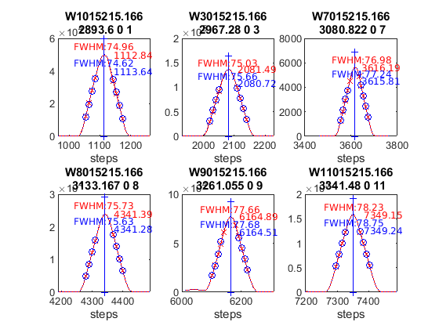 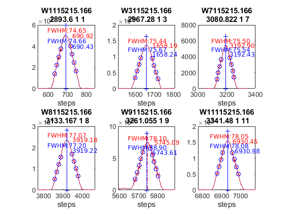 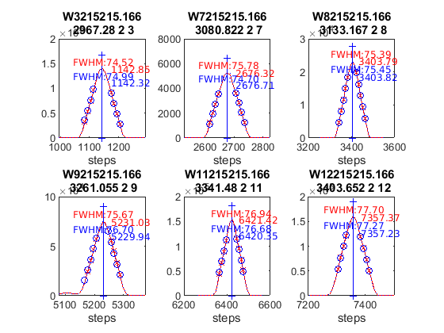 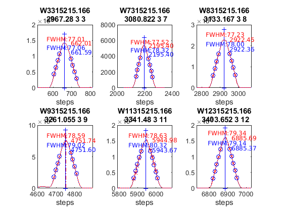 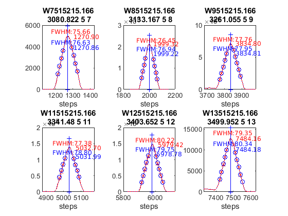 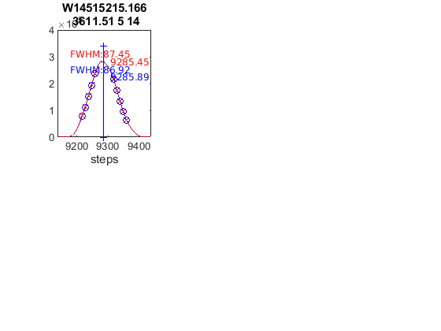

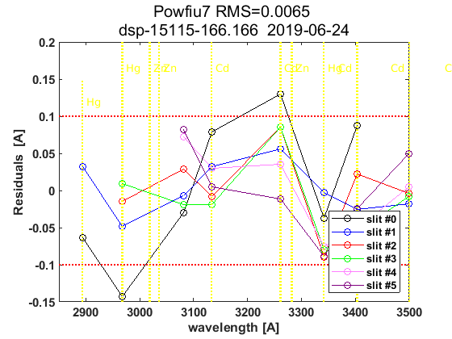

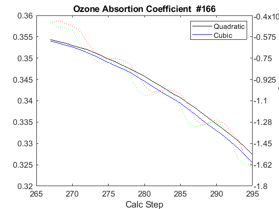
datefile =
736847
now:W1015217.166
now:W3015217.166
now:W7015217.166
now:W8015217.166
now:W9015217.166
now:W11015217.166
now:W12015217.166
now:W1115217.166
now:W3115217.166
now:W7115217.166
now:W8115217.166
now:W9115217.166
now:W11115217.166
now:W12115217.166
now:W13115217.166
now:W3215217.166
now:W7215217.166
now:W8215217.166
now:W9215217.166
now:W11215217.166
now:W12215217.166
now:W13215217.166
now:W3315217.166
now:W7315217.166
now:W8315217.166
now:W9315217.166
now:W11315217.166
now:W12315217.166
now:W13315217.166
now:W7415217.166
now:W8415217.166
now:W9415217.166
now:W11415217.166
now:W12415217.166
now:W13415217.166
now:W7515217.166
now:W8515217.166
now:W9515217.166
now:W11515217.166
now:W12515217.166
now:W13515217.166
now:W14515217.166
lines_dsp_15117__166
saving alldsp to DSP/166_17_152/alldsp_15117_166.166
eliminamos la linea slit 4 3499.952000 -0.265556
eliminamos la linea slit 3 3499.952000 -0.265739
eliminamos la linea slit 2 3499.952000 -0.411532
eliminamos la linea slit 6 3403.652000 0.166241
eliminamos la linea slit 5 3403.652000 0.188009
eliminamos la linea slit 4 3080.822000 -0.127642
eliminamos la linea slit 3 3403.652000 -0.155750
eliminamos la linea slit 2 3403.652000 -0.222718
eliminamos la linea slit 1 3403.652000 -0.222896
eliminamos la linea slit 5 3341.480000 0.121283
eliminamos la linea slit 1 3261.055000 0.153535
saving normaldsp to DSP/166_17_152/dspnorm_15117_166.166 as brewer compatible file
Use polyval(pwl(2,:),wl) for calculating normal wavelengths
Saving ozonecoeffs to DSP/166_17_152/opos15117_166.166
278 WL(A) 3031.42 3062.49 3100.03 3134.45 3167.47 3199.42
Res(A) 11.22 11.18 10.92 11.16 10.88 10.77
O3abs(1/cm) 2.6169 1.7906 1.0068 0.6781 0.3747 0.2973 O3: 0.3487
Daumt O3abs(1/cm) 2.6237 1.7846 0.9988 0.6713 0.3680 0.2971 O3: 0.3585
So2abs(1/cm) 3.5568 5.4627 2.3602 1.9908 1.0455 0.6288
Bremen O3abs(1/cm) 2.6268 1.7881 1.0044 0.6810 0.3731 0.2983 O3: 0.3501
Nicolet 1e4*Rayabs(1/cm) 5054.2 4835.8 4587.8 4374.4 4181.5 4005.2 R: 9.9418
Bates(fix) 1e4*Rayabs(1/cm) 0.0 4870.0 4620.0 4410.0 4220.0 4040.0 R: -1.0000
Bodhaine 1e4*Rayabs(1/cm) 5050.7 4833.8 4587.3 4375.1 4183.1 4007.4 R: 9.5715
I0(mW m^-2nm^-1) 11721.07 9424.89 7356.34 4926.36 4082.54 3254.67 ETC: 1445
Ozone offset due to Rayleigh (RayCOeff/O3Coeff): -2.9 DU
Ozone offset due to Rayleigh (Bodhaine): -3.0 DU
Ratio Ozone for So2(A3)= 1.1681, So2/O3(A2)= 2.6399
O3 factor from Bass & Paur to Daumont = 0.9727
O3 factor from Bass & Paur to Bremen = 0.9961
279 WL(A) 3031.49 3062.56 3100.10 3134.52 3167.54 3199.49
Res(A) 11.22 11.18 10.92 11.16 10.88 10.77
O3abs(1/cm) 2.6140 1.7891 1.0065 0.6780 0.3748 0.2970 O3: 0.3479
Daumt O3abs(1/cm) 2.6209 1.7833 0.9984 0.6713 0.3680 0.2968 O3: 0.3578
So2abs(1/cm) 3.5377 5.4902 2.3669 1.9797 1.0468 0.6268
Bremen O3abs(1/cm) 2.6241 1.7867 1.0040 0.6809 0.3731 0.2981 O3: 0.3494
Nicolet 1e4*Rayabs(1/cm) 5053.6 4835.3 4587.3 4374.0 4181.1 4004.8 R: 9.9389
Bates(fix) 1e4*Rayabs(1/cm) 0.0 4870.0 4620.0 4410.0 4220.0 4040.0 R: -1.0000
Bodhaine 1e4*Rayabs(1/cm) 5050.2 4833.3 4586.8 4374.7 4182.7 4007.1 R: 9.5671
I0(mW m^-2nm^-1) 11714.76 9418.61 7331.60 4922.45 4072.31 3249.82 ETC: 1436
Ozone offset due to Rayleigh (RayCOeff/O3Coeff): -2.9 DU
Ozone offset due to Rayleigh (Bodhaine): -3.0 DU
Ratio Ozone for So2(A3)= 1.1654, So2/O3(A2)= 2.6594
O3 factor from Bass & Paur to Daumont = 0.9723
O3 factor from Bass & Paur to Bremen = 0.9958
280 WL(A) 3031.57 3062.63 3100.17 3134.59 3167.61 3199.56
Res(A) 11.22 11.18 10.92 11.16 10.88 10.77
O3abs(1/cm) 2.6111 1.7876 1.0062 0.6778 0.3748 0.2966 O3: 0.3471
Daumt O3abs(1/cm) 2.6182 1.7820 0.9980 0.6712 0.3679 0.2966 O3: 0.3571
So2abs(1/cm) 3.5185 5.5159 2.3738 1.9680 1.0481 0.6248
Bremen O3abs(1/cm) 2.6214 1.7853 1.0036 0.6809 0.3731 0.2978 O3: 0.3486
Nicolet 1e4*Rayabs(1/cm) 5053.1 4834.8 4586.8 4373.6 4180.7 4004.4 R: 9.9360
Bates(fix) 1e4*Rayabs(1/cm) 0.0 4870.0 4620.0 4410.0 4220.0 4040.0 R: -1.0000
Bodhaine 1e4*Rayabs(1/cm) 5049.6 4832.8 4586.3 4374.2 4182.3 4006.7 R: 9.5650
I0(mW m^-2nm^-1) 11708.46 9412.33 7307.00 4918.55 4062.09 3244.85 ETC: 1427
Ozone offset due to Rayleigh (RayCOeff/O3Coeff): -2.9 DU
Ozone offset due to Rayleigh (Bodhaine): -3.0 DU
Ratio Ozone for So2(A3)= 1.1628, So2/O3(A2)= 2.6774
O3 factor from Bass & Paur to Daumont = 0.9720
O3 factor from Bass & Paur to Bremen = 0.9956
281 WL(A) 3031.64 3062.71 3100.24 3134.66 3167.69 3199.63
Res(A) 11.22 11.18 10.92 11.16 10.88 10.77
O3abs(1/cm) 2.6083 1.7862 1.0059 0.6776 0.3748 0.2962 O3: 0.3463
Daumt O3abs(1/cm) 2.6155 1.7806 0.9977 0.6712 0.3679 0.2963 O3: 0.3564
So2abs(1/cm) 3.4995 5.5406 2.3813 1.9566 1.0494 0.6228
Bremen O3abs(1/cm) 2.6188 1.7839 1.0033 0.6807 0.3731 0.2975 O3: 0.3478
Nicolet 1e4*Rayabs(1/cm) 5052.6 4834.3 4586.4 4373.1 4180.3 4004.0 R: 9.9331
Bates(fix) 1e4*Rayabs(1/cm) 0.0 4870.0 4620.0 4410.0 4220.0 4040.0 R: -1.0000
Bodhaine 1e4*Rayabs(1/cm) 5049.1 4832.3 4585.9 4373.8 4181.9 4006.3 R: 9.5639
I0(mW m^-2nm^-1) 11702.17 9406.07 7282.54 4914.66 4051.91 3238.77 ETC: 1417
Ozone offset due to Rayleigh (RayCOeff/O3Coeff): -2.9 DU
Ozone offset due to Rayleigh (Bodhaine): -3.1 DU
Ratio Ozone for So2(A3)= 1.1602, So2/O3(A2)= 2.6945
O3 factor from Bass & Paur to Daumont = 0.9717
O3 factor from Bass & Paur to Bremen = 0.9955
282 WL(A) 3031.72 3062.78 3100.31 3134.73 3167.76 3199.70
Res(A) 11.22 11.18 10.92 11.16 10.88 10.77
O3abs(1/cm) 2.6058 1.7848 1.0056 0.6774 0.3748 0.2958 O3: 0.3453
Daumt O3abs(1/cm) 2.6128 1.7793 0.9973 0.6711 0.3679 0.2960 O3: 0.3555
So2abs(1/cm) 3.4808 5.5653 2.3886 1.9452 1.0507 0.6207
Bremen O3abs(1/cm) 2.6162 1.7824 1.0029 0.6806 0.3731 0.2972 O3: 0.3470
Nicolet 1e4*Rayabs(1/cm) 5052.0 4833.8 4585.9 4372.7 4179.9 4003.7 R: 9.9302
Bates(fix) 1e4*Rayabs(1/cm) 0.0 4870.0 4620.0 4410.0 4220.0 4040.0 R: -1.0000
Bodhaine 1e4*Rayabs(1/cm) 5048.6 4831.8 4585.4 4373.4 4181.5 4005.9 R: 9.5584
I0(mW m^-2nm^-1) 11695.89 9399.82 7258.21 4910.76 4041.74 3228.93 ETC: 1400
Ozone offset due to Rayleigh (RayCOeff/O3Coeff): -2.9 DU
Ozone offset due to Rayleigh (Bodhaine): -3.1 DU
Ratio Ozone for So2(A3)= 1.1573, So2/O3(A2)= 2.7121
O3 factor from Bass & Paur to Daumont = 0.9711
O3 factor from Bass & Paur to Bremen = 0.9951
283 WL(A) 3031.79 3062.85 3100.39 3134.80 3167.83 3199.77
Res(A) 11.22 11.18 10.92 11.16 10.88 10.77
O3abs(1/cm) 2.6032 1.7833 1.0053 0.6771 0.3748 0.2953 O3: 0.3442
Daumt O3abs(1/cm) 2.6101 1.7779 0.9970 0.6710 0.3679 0.2957 O3: 0.3547
So2abs(1/cm) 3.4641 5.5897 2.3961 1.9337 1.0519 0.6186
Bremen O3abs(1/cm) 2.6136 1.7809 1.0026 0.6805 0.3731 0.2968 O3: 0.3461
Nicolet 1e4*Rayabs(1/cm) 5051.5 4833.3 4585.5 4372.3 4179.5 4003.3 R: 9.9273
Bates(fix) 1e4*Rayabs(1/cm) 0.0 4870.0 4620.0 4410.0 4220.0 4040.0 R: -1.0000
Bodhaine 1e4*Rayabs(1/cm) 5048.1 4831.3 4585.0 4372.9 4181.1 4005.6 R: 9.5565
I0(mW m^-2nm^-1) 11689.62 9393.57 7234.02 4906.87 4031.60 3219.11 ETC: 1384
Ozone offset due to Rayleigh (RayCOeff/O3Coeff): -2.9 DU
Ozone offset due to Rayleigh (Bodhaine): -3.1 DU
Ratio Ozone for So2(A3)= 1.1542, So2/O3(A2)= 2.7301
O3 factor from Bass & Paur to Daumont = 0.9706
O3 factor from Bass & Paur to Bremen = 0.9947
284 WL(A) 3031.86 3062.93 3100.46 3134.88 3167.90 3199.84
Res(A) 11.22 11.18 10.91 11.16 10.88 10.77
O3abs(1/cm) 2.6007 1.7818 1.0050 0.6769 0.3748 0.2949 O3: 0.3432
Daumt O3abs(1/cm) 2.6075 1.7765 0.9966 0.6708 0.3680 0.2953 O3: 0.3538
So2abs(1/cm) 3.4474 5.6125 2.4037 1.9218 1.0532 0.6164
Bremen O3abs(1/cm) 2.6111 1.7794 1.0022 0.6803 0.3732 0.2965 O3: 0.3451
Nicolet 1e4*Rayabs(1/cm) 5051.0 4832.8 4585.0 4371.9 4179.1 4002.9 R: 9.9243
Bates(fix) 1e4*Rayabs(1/cm) 0.0 4870.0 4620.0 4410.0 4220.0 4040.0 R: -1.0000
Bodhaine 1e4*Rayabs(1/cm) 5047.5 4830.8 4584.5 4372.5 4180.7 4005.2 R: 9.5543
I0(mW m^-2nm^-1) 11683.36 9387.33 7210.14 4902.99 4021.48 3209.31 ETC: 1367
Ozone offset due to Rayleigh (RayCOeff/O3Coeff): -2.9 DU
Ozone offset due to Rayleigh (Bodhaine): -3.1 DU
Ratio Ozone for So2(A3)= 1.1510, So2/O3(A2)= 2.7469
O3 factor from Bass & Paur to Daumont = 0.9701
O3 factor from Bass & Paur to Bremen = 0.9943
285 WL(A) 3031.94 3063.00 3100.53 3134.95 3167.97 3199.91
Res(A) 11.22 11.18 10.91 11.16 10.88 10.77
O3abs(1/cm) 2.5981 1.7801 1.0048 0.6765 0.3749 0.2944 O3: 0.3422
Daumt O3abs(1/cm) 2.6049 1.7750 0.9963 0.6707 0.3680 0.2950 O3: 0.3528
So2abs(1/cm) 3.4309 5.6340 2.4120 1.9102 1.0544 0.6142
Bremen O3abs(1/cm) 2.6086 1.7779 1.0019 0.6801 0.3732 0.2961 O3: 0.3442
Nicolet 1e4*Rayabs(1/cm) 5050.4 4832.3 4584.5 4371.4 4178.7 4002.5 R: 9.9214
Bates(fix) 1e4*Rayabs(1/cm) 0.0 4870.0 4620.0 4410.0 4220.0 4040.0 R: -1.0000
Bodhaine 1e4*Rayabs(1/cm) 5047.0 4830.3 4584.1 4372.1 4180.3 4004.8 R: 9.5509
I0(mW m^-2nm^-1) 11677.11 9381.10 7195.59 4899.10 4011.39 3199.53 ETC: 1360
Ozone offset due to Rayleigh (RayCOeff/O3Coeff): -2.9 DU
Ozone offset due to Rayleigh (Bodhaine): -3.1 DU
Ratio Ozone for So2(A3)= 1.1476, So2/O3(A2)= 2.7633
O3 factor from Bass & Paur to Daumont = 0.9697
O3 factor from Bass & Paur to Bremen = 0.9942
286 WL(A) 3032.01 3063.07 3100.60 3135.02 3168.04 3199.98
Res(A) 11.22 11.18 10.91 11.16 10.88 10.77
O3abs(1/cm) 2.5954 1.7784 1.0045 0.6762 0.3750 0.2939 O3: 0.3411
Daumt O3abs(1/cm) 2.6023 1.7736 0.9959 0.6705 0.3680 0.2946 O3: 0.3519
So2abs(1/cm) 3.4148 5.6556 2.4202 1.8986 1.0557 0.6120
Bremen O3abs(1/cm) 2.6061 1.7763 1.0015 0.6798 0.3733 0.2957 O3: 0.3432
Nicolet 1e4*Rayabs(1/cm) 5049.9 4831.8 4584.1 4371.0 4178.3 4002.2 R: 9.9185
Bates(fix) 1e4*Rayabs(1/cm) 0.0 4870.0 4620.0 4410.0 4220.0 4040.0 R: -1.0000
Bodhaine 1e4*Rayabs(1/cm) 5046.5 4829.8 4583.6 4371.7 4179.9 4004.5 R: 9.5482
I0(mW m^-2nm^-1) 11670.86 9374.88 7181.46 4895.22 4001.32 3189.78 ETC: 1354
Ozone offset due to Rayleigh (RayCOeff/O3Coeff): -2.9 DU
Ozone offset due to Rayleigh (Bodhaine): -3.1 DU
Ratio Ozone for So2(A3)= 1.1441, So2/O3(A2)= 2.7797
O3 factor from Bass & Paur to Daumont = 0.9694
O3 factor from Bass & Paur to Bremen = 0.9940
287 WL(A) 3032.08 3063.15 3100.68 3135.09 3168.11 3200.05
Res(A) 11.22 11.18 10.91 11.16 10.88 10.77
O3abs(1/cm) 2.5927 1.7768 1.0041 0.6758 0.3750 0.2934 O3: 0.3400
Daumt O3abs(1/cm) 2.5998 1.7721 0.9956 0.6703 0.3681 0.2942 O3: 0.3508
So2abs(1/cm) 3.4006 5.6767 2.4284 1.8870 1.0569 0.6098
Bremen O3abs(1/cm) 2.6036 1.7748 1.0012 0.6796 0.3733 0.2953 O3: 0.3421
Nicolet 1e4*Rayabs(1/cm) 5049.4 4831.3 4583.6 4370.6 4177.9 4001.8 R: 9.9156
Bates(fix) 1e4*Rayabs(1/cm) 0.0 4870.0 4620.0 4410.0 4220.0 4040.0 R: -1.0000
Bodhaine 1e4*Rayabs(1/cm) 5045.9 4829.3 4583.1 4371.2 4179.5 4004.1 R: 9.5457
I0(mW m^-2nm^-1) 11664.63 9368.67 7167.71 4891.35 3991.27 3180.04 ETC: 1347
Ozone offset due to Rayleigh (RayCOeff/O3Coeff): -2.9 DU
Ozone offset due to Rayleigh (Bodhaine): -3.1 DU
Ratio Ozone for So2(A3)= 1.1406, So2/O3(A2)= 2.7958
O3 factor from Bass & Paur to Daumont = 0.9692
O3 factor from Bass & Paur to Bremen = 0.9939
288 WL(A) 3032.16 3063.22 3100.75 3135.16 3168.18 3200.12
Res(A) 11.22 11.18 10.91 11.16 10.88 10.77
O3abs(1/cm) 2.5902 1.7752 1.0038 0.6754 0.3751 0.2930 O3: 0.3390
Daumt O3abs(1/cm) 2.5972 1.7706 0.9952 0.6701 0.3682 0.2938 O3: 0.3498
So2abs(1/cm) 3.3864 5.6963 2.4367 1.8751 1.0581 0.6075
Bremen O3abs(1/cm) 2.6012 1.7732 1.0008 0.6793 0.3734 0.2949 O3: 0.3410
Nicolet 1e4*Rayabs(1/cm) 5048.8 4830.8 4583.2 4370.1 4177.5 4001.4 R: 9.9127
Bates(fix) 1e4*Rayabs(1/cm) 0.0 4870.0 4620.0 4410.0 4220.0 4040.0 R: -1.0000
Bodhaine 1e4*Rayabs(1/cm) 5045.4 4828.8 4582.7 4370.8 4179.1 4003.7 R: 9.5439
I0(mW m^-2nm^-1) 11658.40 9362.47 7152.55 4887.47 3981.24 3170.33 ETC: 1340
Ozone offset due to Rayleigh (RayCOeff/O3Coeff): -2.9 DU
Ozone offset due to Rayleigh (Bodhaine): -3.1 DU
Ratio Ozone for So2(A3)= 1.1373, So2/O3(A2)= 2.8104
O3 factor from Bass & Paur to Daumont = 0.9691
O3 factor from Bass & Paur to Bremen = 0.9940
saving powfiu7 to DSP/166_17_152/dsp_15117_166.166
freecoef =
4
freecoef =
9
freecoef =
9
freecoef =
9
freecoef =
9
freecoef =
9
freecoef =
9
freecoef =
9
freecoef =
9
freecoef =
9
saving data to file:DSP/166_17_152/dsp_15117_166.166
Use brstps2 to calculate steps and wavelengths
Saving ozonecoeffs to DSP/166_17_152/opos_pow7_15117_166.166
278 WL(A) 3031.55 3062.56 3100.05 3134.59 3167.57 3199.58
Res(A) 11.20 11.16 10.90 11.14 10.88 10.77
O3abs(1/cm) 2.6117 1.7892 1.0067 0.6778 0.3748 0.2965 O3: 0.3475
Daumt O3abs(1/cm) 2.6187 1.7834 0.9986 0.6713 0.3680 0.2965 O3: 0.3575
So2abs(1/cm) 3.5218 5.4911 2.3625 1.9677 1.0473 0.6244
Bremen O3abs(1/cm) 2.6220 1.7868 1.0042 0.6809 0.3731 0.2977 O3: 0.3491
Nicolet 1e4*Rayabs(1/cm) 5053.2 4835.3 4587.6 4373.6 4181.0 4004.3 R: 9.9889
Bates(fix) 1e4*Rayabs(1/cm) 0.0 4870.0 4620.0 4410.0 4220.0 4040.0 R: -1.0000
Bodhaine 1e4*Rayabs(1/cm) 5049.8 4833.3 4587.1 4374.2 4182.5 4006.6 R: 9.6138
I0(mW m^-2nm^-1) 11710.07 9418.70 7347.71 4918.38 4068.46 3243.52 ETC: 1452
Ozone offset due to Rayleigh (RayCOeff/O3Coeff): -2.9 DU
Ozone offset due to Rayleigh (Bodhaine): -3.1 DU
Ratio Ozone for So2(A3)= 1.1641, So2/O3(A2)= 2.6547
O3 factor from Bass & Paur to Daumont = 0.9718
O3 factor from Bass & Paur to Bremen = 0.9954
279 WL(A) 3031.63 3062.63 3100.13 3134.66 3167.64 3199.65
Res(A) 11.20 11.16 10.90 11.14 10.88 10.77
O3abs(1/cm) 2.6089 1.7877 1.0064 0.6776 0.3748 0.2962 O3: 0.3466
Daumt O3abs(1/cm) 2.6160 1.7820 0.9983 0.6712 0.3679 0.2962 O3: 0.3568
So2abs(1/cm) 3.5026 5.5166 2.3692 1.9563 1.0486 0.6223
Bremen O3abs(1/cm) 2.6193 1.7854 1.0038 0.6808 0.3731 0.2974 O3: 0.3483
Nicolet 1e4*Rayabs(1/cm) 5052.7 4834.8 4587.1 4373.1 4180.6 4003.9 R: 9.9865
Bates(fix) 1e4*Rayabs(1/cm) 0.0 4870.0 4620.0 4410.0 4220.0 4040.0 R: -1.0000
Bodhaine 1e4*Rayabs(1/cm) 5049.2 4832.8 4586.6 4373.8 4182.1 4006.2 R: 9.6167
I0(mW m^-2nm^-1) 11703.77 9412.42 7322.97 4914.48 4058.26 3236.41 ETC: 1439
Ozone offset due to Rayleigh (RayCOeff/O3Coeff): -2.9 DU
Ozone offset due to Rayleigh (Bodhaine): -3.1 DU
Ratio Ozone for So2(A3)= 1.1614, So2/O3(A2)= 2.6726
O3 factor from Bass & Paur to Daumont = 0.9715
O3 factor from Bass & Paur to Bremen = 0.9952
280 WL(A) 3031.70 3062.70 3100.20 3134.74 3167.71 3199.72
Res(A) 11.20 11.16 10.90 11.14 10.88 10.77
O3abs(1/cm) 2.6063 1.7863 1.0061 0.6774 0.3748 0.2957 O3: 0.3456
Daumt O3abs(1/cm) 2.6133 1.7807 0.9979 0.6711 0.3679 0.2959 O3: 0.3560
So2abs(1/cm) 3.4837 5.5414 2.3764 1.9449 1.0499 0.6202
Bremen O3abs(1/cm) 2.6167 1.7839 1.0035 0.6806 0.3731 0.2971 O3: 0.3474
Nicolet 1e4*Rayabs(1/cm) 5052.2 4834.3 4586.7 4372.7 4180.2 4003.6 R: 9.9841
Bates(fix) 1e4*Rayabs(1/cm) 0.0 4870.0 4620.0 4410.0 4220.0 4040.0 R: -1.0000
Bodhaine 1e4*Rayabs(1/cm) 5048.7 4832.3 4586.2 4373.4 4181.7 4005.9 R: 9.6137
I0(mW m^-2nm^-1) 11697.48 9406.15 7298.36 4910.58 4048.08 3226.57 ETC: 1422
Ozone offset due to Rayleigh (RayCOeff/O3Coeff): -2.9 DU
Ozone offset due to Rayleigh (Bodhaine): -3.1 DU
Ratio Ozone for So2(A3)= 1.1585, So2/O3(A2)= 2.6901
O3 factor from Bass & Paur to Daumont = 0.9709
O3 factor from Bass & Paur to Bremen = 0.9948
281 WL(A) 3031.77 3062.78 3100.27 3134.81 3167.78 3199.79
Res(A) 11.20 11.16 10.90 11.14 10.88 10.77
O3abs(1/cm) 2.6038 1.7848 1.0058 0.6772 0.3748 0.2952 O3: 0.3446
Daumt O3abs(1/cm) 2.6107 1.7793 0.9975 0.6710 0.3679 0.2956 O3: 0.3551
So2abs(1/cm) 3.4669 5.5661 2.3838 1.9334 1.0511 0.6181
Bremen O3abs(1/cm) 2.6142 1.7825 1.0031 0.6805 0.3731 0.2968 O3: 0.3465
Nicolet 1e4*Rayabs(1/cm) 5051.6 4833.8 4586.2 4372.3 4179.8 4003.2 R: 9.9816
Bates(fix) 1e4*Rayabs(1/cm) 0.0 4870.0 4620.0 4410.0 4220.0 4040.0 R: -1.0000
Bodhaine 1e4*Rayabs(1/cm) 5048.2 4831.8 4585.7 4372.9 4181.3 4005.5 R: 9.6070
I0(mW m^-2nm^-1) 11691.20 9399.89 7273.89 4906.68 4037.92 3216.74 ETC: 1406
Ozone offset due to Rayleigh (RayCOeff/O3Coeff): -2.9 DU
Ozone offset due to Rayleigh (Bodhaine): -3.1 DU
Ratio Ozone for So2(A3)= 1.1555, So2/O3(A2)= 2.7081
O3 factor from Bass & Paur to Daumont = 0.9703
O3 factor from Bass & Paur to Bremen = 0.9944
282 WL(A) 3031.85 3062.85 3100.34 3134.88 3167.85 3199.86
Res(A) 11.20 11.16 10.90 11.14 10.88 10.77
O3abs(1/cm) 2.6012 1.7834 1.0055 0.6769 0.3748 0.2948 O3: 0.3435
Daumt O3abs(1/cm) 2.6080 1.7779 0.9972 0.6709 0.3679 0.2953 O3: 0.3542
So2abs(1/cm) 3.4502 5.5907 2.3912 1.9216 1.0524 0.6159
Bremen O3abs(1/cm) 2.6116 1.7810 1.0028 0.6803 0.3731 0.2964 O3: 0.3456
Nicolet 1e4*Rayabs(1/cm) 5051.1 4833.3 4585.7 4371.8 4179.4 4002.8 R: 9.9792
Bates(fix) 1e4*Rayabs(1/cm) 0.0 4870.0 4620.0 4410.0 4220.0 4040.0 R: -1.0000
Bodhaine 1e4*Rayabs(1/cm) 5047.6 4831.3 4585.3 4372.5 4180.9 4005.1 R: 9.6073
I0(mW m^-2nm^-1) 11684.93 9393.63 7249.56 4902.78 4027.79 3206.94 ETC: 1389
Ozone offset due to Rayleigh (RayCOeff/O3Coeff): -2.9 DU
Ozone offset due to Rayleigh (Bodhaine): -3.1 DU
Ratio Ozone for So2(A3)= 1.1523, So2/O3(A2)= 2.7263
O3 factor from Bass & Paur to Daumont = 0.9698
O3 factor from Bass & Paur to Bremen = 0.9940
283 WL(A) 3031.92 3062.92 3100.41 3134.95 3167.92 3199.92
Res(A) 11.20 11.16 10.90 11.14 10.88 10.77
O3abs(1/cm) 2.5987 1.7819 1.0052 0.6766 0.3748 0.2943 O3: 0.3425
Daumt O3abs(1/cm) 2.6054 1.7765 0.9969 0.6707 0.3680 0.2949 O3: 0.3533
So2abs(1/cm) 3.4336 5.6133 2.3987 1.9100 1.0537 0.6137
Bremen O3abs(1/cm) 2.6091 1.7795 1.0024 0.6801 0.3732 0.2960 O3: 0.3446
Nicolet 1e4*Rayabs(1/cm) 5050.6 4832.8 4585.3 4371.4 4179.0 4002.4 R: 9.9768
Bates(fix) 1e4*Rayabs(1/cm) 0.0 4870.0 4620.0 4410.0 4220.0 4040.0 R: -1.0000
Bodhaine 1e4*Rayabs(1/cm) 5047.1 4830.8 4584.8 4372.1 4180.6 4004.7 R: 9.6078
I0(mW m^-2nm^-1) 11678.66 9387.39 7225.36 4898.89 4017.68 3197.17 ETC: 1372
Ozone offset due to Rayleigh (RayCOeff/O3Coeff): -2.9 DU
Ozone offset due to Rayleigh (Bodhaine): -3.1 DU
Ratio Ozone for So2(A3)= 1.1492, So2/O3(A2)= 2.7427
O3 factor from Bass & Paur to Daumont = 0.9694
O3 factor from Bass & Paur to Bremen = 0.9938
284 WL(A) 3031.99 3063.00 3100.49 3135.02 3167.99 3199.99
Res(A) 11.20 11.16 10.90 11.14 10.88 10.77
O3abs(1/cm) 2.5960 1.7802 1.0049 0.6762 0.3749 0.2938 O3: 0.3415
Daumt O3abs(1/cm) 2.6028 1.7751 0.9965 0.6706 0.3680 0.2945 O3: 0.3523
So2abs(1/cm) 3.4173 5.6348 2.4065 1.8984 1.0549 0.6115
Bremen O3abs(1/cm) 2.6066 1.7780 1.0021 0.6799 0.3732 0.2956 O3: 0.3436
Nicolet 1e4*Rayabs(1/cm) 5050.0 4832.3 4584.8 4371.0 4178.6 4002.1 R: 9.9743
Bates(fix) 1e4*Rayabs(1/cm) 0.0 4870.0 4620.0 4410.0 4220.0 4040.0 R: -1.0000
Bodhaine 1e4*Rayabs(1/cm) 5046.6 4830.3 4584.3 4371.7 4180.2 4004.4 R: 9.6012
I0(mW m^-2nm^-1) 11672.41 9381.15 7205.83 4895.00 4007.59 3187.41 ETC: 1360
Ozone offset due to Rayleigh (RayCOeff/O3Coeff): -2.9 DU
Ozone offset due to Rayleigh (Bodhaine): -3.1 DU
Ratio Ozone for So2(A3)= 1.1457, So2/O3(A2)= 2.7591
O3 factor from Bass & Paur to Daumont = 0.9692
O3 factor from Bass & Paur to Bremen = 0.9937
285 WL(A) 3032.07 3063.07 3100.56 3135.09 3168.06 3200.06
Res(A) 11.20 11.16 10.90 11.14 10.88 10.76
O3abs(1/cm) 2.5933 1.7785 1.0047 0.6758 0.3750 0.2933 O3: 0.3404
Daumt O3abs(1/cm) 2.6003 1.7737 0.9962 0.6703 0.3680 0.2941 O3: 0.3513
So2abs(1/cm) 3.4029 5.6564 2.4148 1.8868 1.0561 0.6092
Bremen O3abs(1/cm) 2.6041 1.7764 1.0017 0.6796 0.3733 0.2952 O3: 0.3426
Nicolet 1e4*Rayabs(1/cm) 5049.5 4831.8 4584.4 4370.6 4178.2 4001.7 R: 9.9719
Bates(fix) 1e4*Rayabs(1/cm) 0.0 4870.0 4620.0 4410.0 4220.0 4040.0 R: -1.0000
Bodhaine 1e4*Rayabs(1/cm) 5046.1 4829.8 4583.9 4371.2 4179.8 4004.0 R: 9.5977
I0(mW m^-2nm^-1) 11666.16 9374.92 7191.41 4891.11 3997.53 3177.67 ETC: 1353
Ozone offset due to Rayleigh (RayCOeff/O3Coeff): -2.9 DU
Ozone offset due to Rayleigh (Bodhaine): -3.1 DU
Ratio Ozone for So2(A3)= 1.1422, So2/O3(A2)= 2.7755
O3 factor from Bass & Paur to Daumont = 0.9691
O3 factor from Bass & Paur to Bremen = 0.9937
286 WL(A) 3032.14 3063.14 3100.63 3135.16 3168.13 3200.13
Res(A) 11.20 11.16 10.90 11.14 10.88 10.76
O3abs(1/cm) 2.5907 1.7769 1.0044 0.6754 0.3751 0.2929 O3: 0.3393
Daumt O3abs(1/cm) 2.5978 1.7722 0.9958 0.6701 0.3681 0.2937 O3: 0.3502
So2abs(1/cm) 3.3887 5.6777 2.4230 1.8749 1.0573 0.6069
Bremen O3abs(1/cm) 2.6017 1.7749 1.0014 0.6794 0.3734 0.2948 O3: 0.3415
Nicolet 1e4*Rayabs(1/cm) 5049.0 4831.3 4583.9 4370.1 4177.8 4001.3 R: 9.9695
Bates(fix) 1e4*Rayabs(1/cm) 0.0 4870.0 4620.0 4410.0 4220.0 4040.0 R: -1.0000
Bodhaine 1e4*Rayabs(1/cm) 5045.5 4829.4 4583.4 4370.8 4179.4 4003.6 R: 9.6014
I0(mW m^-2nm^-1) 11659.93 9368.70 7177.39 4887.23 3987.49 3167.96 ETC: 1347
Ozone offset due to Rayleigh (RayCOeff/O3Coeff): -2.9 DU
Ozone offset due to Rayleigh (Bodhaine): -3.1 DU
Ratio Ozone for So2(A3)= 1.1387, So2/O3(A2)= 2.7917
O3 factor from Bass & Paur to Daumont = 0.9689
O3 factor from Bass & Paur to Bremen = 0.9937
287 WL(A) 3032.22 3063.22 3100.70 3135.23 3168.20 3200.20
Res(A) 11.20 11.16 10.90 11.14 10.88 10.76
O3abs(1/cm) 2.5884 1.7753 1.0040 0.6750 0.3751 0.2923 O3: 0.3381
Daumt O3abs(1/cm) 2.5953 1.7707 0.9955 0.6699 0.3682 0.2933 O3: 0.3491
So2abs(1/cm) 3.3747 5.6971 2.4312 1.8631 1.0585 0.6046
Bremen O3abs(1/cm) 2.5993 1.7733 1.0011 0.6791 0.3734 0.2944 O3: 0.3404
Nicolet 1e4*Rayabs(1/cm) 5048.4 4830.8 4583.4 4369.7 4177.4 4001.0 R: 9.9670
Bates(fix) 1e4*Rayabs(1/cm) 0.0 4870.0 4620.0 4410.0 4220.0 4040.0 R: -1.0000
Bodhaine 1e4*Rayabs(1/cm) 5045.0 4828.9 4583.0 4370.4 4179.0 4003.3 R: 9.5956
I0(mW m^-2nm^-1) 11653.70 9362.49 7163.76 4883.35 3977.47 3158.26 ETC: 1341
Ozone offset due to Rayleigh (RayCOeff/O3Coeff): -2.9 DU
Ozone offset due to Rayleigh (Bodhaine): -3.1 DU
Ratio Ozone for So2(A3)= 1.1351, So2/O3(A2)= 2.8068
O3 factor from Bass & Paur to Daumont = 0.9684
O3 factor from Bass & Paur to Bremen = 0.9934
288 WL(A) 3032.29 3063.29 3100.77 3135.31 3168.28 3200.27
Res(A) 11.20 11.16 10.90 11.14 10.88 10.76
O3abs(1/cm) 2.5860 1.7737 1.0037 0.6746 0.3752 0.2917 O3: 0.3368
Daumt O3abs(1/cm) 2.5928 1.7692 0.9951 0.6696 0.3683 0.2928 O3: 0.3480
So2abs(1/cm) 3.3611 5.7153 2.4398 1.8514 1.0597 0.6022
Bremen O3abs(1/cm) 2.5969 1.7717 1.0007 0.6787 0.3735 0.2939 O3: 0.3392
Nicolet 1e4*Rayabs(1/cm) 5047.9 4830.3 4583.0 4369.3 4177.0 4000.6 R: 9.9646
Bates(fix) 1e4*Rayabs(1/cm) 0.0 4870.0 4620.0 4410.0 4220.0 4040.0 R: -1.0000
Bodhaine 1e4*Rayabs(1/cm) 5044.5 4828.4 4582.5 4370.0 4178.6 4002.9 R: 9.5905
I0(mW m^-2nm^-1) 11647.48 9356.29 7147.38 4879.47 3967.48 3148.59 ETC: 1332
Ozone offset due to Rayleigh (RayCOeff/O3Coeff): -3.0 DU
Ozone offset due to Rayleigh (Bodhaine): -3.1 DU
Ratio Ozone for So2(A3)= 1.1311, So2/O3(A2)= 2.8214
O3 factor from Bass & Paur to Daumont = 0.9678
O3 factor from Bass & Paur to Bremen = 0.9929
Warning: The EraseMode property is no longer supported and will error
in a future release.
Warning: The EraseMode property is no longer supported and will error
in a future release.
Warning: The EraseMode property is no longer supported and will error
in a future release.
Warning: The EraseMode property is no longer supported and will error
in a future release.
Warning: The EraseMode property is no longer supported and will error
in a future release.
Warning: The EraseMode property is no longer supported and will error
in a future release.
Warning: The EraseMode property is no longer supported and will error
in a future release.
Warning: The EraseMode property is no longer supported and will error
in a future release.
Warning: The EraseMode property is no longer supported and will error
in a future release.

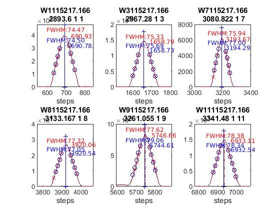 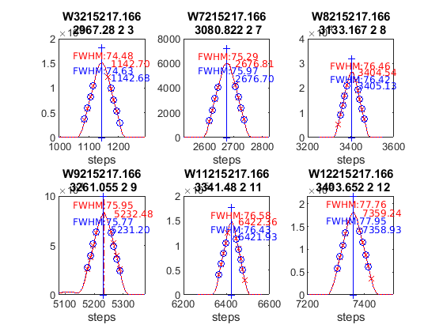 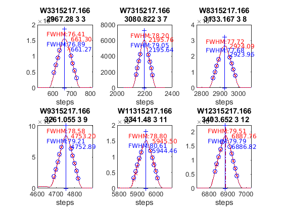 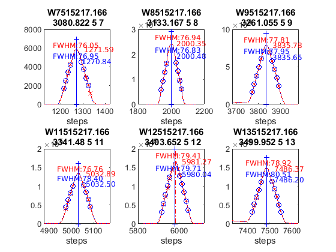 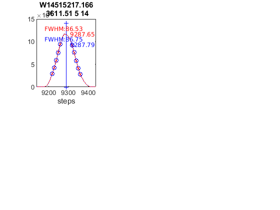 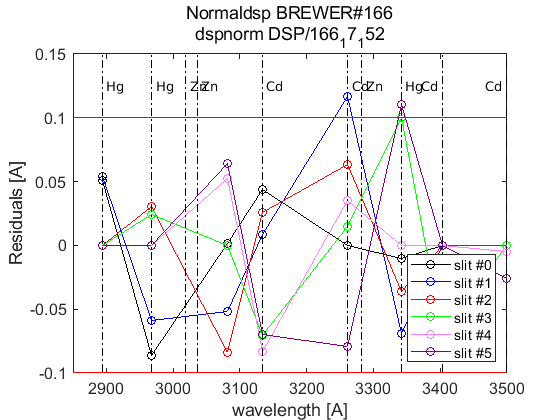 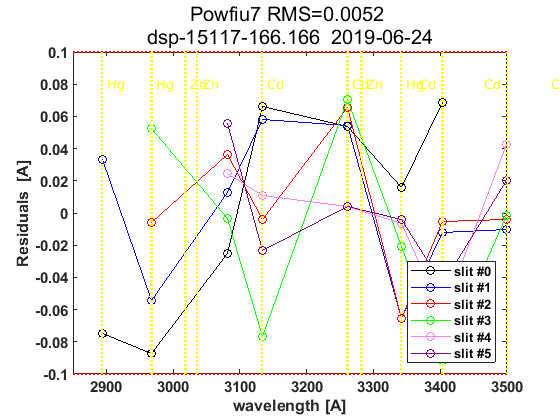 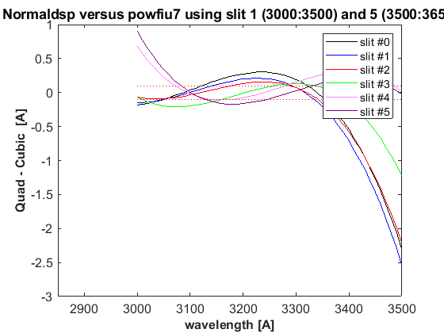 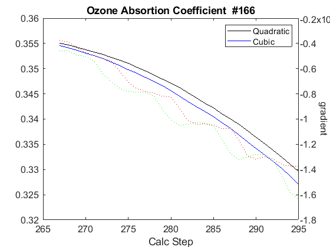
datefile =
737599
now:W1017319.166
now:W3017319.166
now:W7017319.166
now:W8017319.166
now:W9017319.166
now:W11017319.166
now:W12017319.166
now:W1117319.166
now:W3117319.166
now:W7117319.166
now:W8117319.166
now:W9117319.166
now:W11117319.166
now:W12117319.166
now:W13117319.166
now:W3217319.166
now:W7217319.166
now:W8217319.166
now:W9217319.166
now:W11217319.166
now:W12217319.166
now:W13217319.166
now:W3317319.166
now:W7317319.166
now:W8317319.166
now:W9317319.166
now:W11317319.166
now:W12317319.166
now:W13317319.166
now:W7417319.166
now:W8417319.166
now:W9417319.166
now:W11417319.166
now:W12417319.166
now:W13417319.166
now:W7517319.166
now:W8517319.166
now:W9517319.166
now:W11517319.166
now:W12517319.166
now:W13517319.166
now:W14517319.166
lines_dsp_17319__166
saving alldsp to DSP/166_19_174/alldsp_17319_166.166
eliminamos la linea slit 4 3341.480000 0.273643
eliminamos la linea slit 3 3341.480000 0.283886
eliminamos la linea slit 2 3499.952000 -0.284944
eliminamos la linea slit 1 3341.480000 0.253745
eliminamos la linea slit 5 3341.480000 0.126521
eliminamos la linea slit 4 3499.952000 -0.136501
eliminamos la linea slit 3 3403.652000 0.173715
eliminamos la linea slit 2 3403.652000 -0.191934
eliminamos la linea slit 1 3261.055000 0.130231
eliminamos la linea slit 4 3080.822000 -0.139686
eliminamos la linea slit 3 3080.822000 -0.135559
saving normaldsp to DSP/166_19_174/dspnorm_17319_166.166 as brewer compatible file
Use polyval(pwl(2,:),wl) for calculating normal wavelengths
Saving ozonecoeffs to DSP/166_19_174/opos17319_166.166
281 WL(A) 3031.74 3062.86 3100.24 3134.84 3167.88 3199.80
Res(A) 11.27 11.19 10.93 11.14 10.95 10.75
O3abs(1/cm) 2.6050 1.7831 1.0059 0.6771 0.3749 0.2952 O3: 0.3444
Daumt O3abs(1/cm) 2.6119 1.7777 0.9977 0.6710 0.3681 0.2956 O3: 0.3550
So2abs(1/cm) 3.4771 5.5919 2.3810 1.9284 1.0528 0.6178
Bremen O3abs(1/cm) 2.6154 1.7807 1.0033 0.6804 0.3733 0.2967 O3: 0.3464
Nicolet 1e4*Rayabs(1/cm) 5051.9 4833.2 4586.4 4372.1 4179.2 4003.1 R: 11.4261
Bates(fix) 1e4*Rayabs(1/cm) 0.0 4870.0 4620.0 4410.0 4220.0 4040.0 R: -1.0000
Bodhaine 1e4*Rayabs(1/cm) 5048.4 4831.3 4585.9 4372.8 4180.8 4005.4 R: 11.0495
I0(mW m^-2nm^-1) 11693.07 9392.82 7283.59 4904.98 4024.12 3214.94 ETC: 1443
Ozone offset due to Rayleigh (RayCOeff/O3Coeff): -3.3 DU
Ozone offset due to Rayleigh (Bodhaine): -3.5 DU
Ratio Ozone for So2(A3)= 1.1531, So2/O3(A2)= 2.7290
O3 factor from Bass & Paur to Daumont = 0.9702
O3 factor from Bass & Paur to Bremen = 0.9944
282 WL(A) 3031.82 3062.94 3100.31 3134.91 3167.95 3199.87
Res(A) 11.27 11.19 10.93 11.14 10.95 10.75
O3abs(1/cm) 2.6025 1.7815 1.0056 0.6768 0.3749 0.2947 O3: 0.3434
Daumt O3abs(1/cm) 2.6093 1.7763 0.9974 0.6708 0.3681 0.2952 O3: 0.3541
So2abs(1/cm) 3.4606 5.6144 2.3884 1.9165 1.0541 0.6156
Bremen O3abs(1/cm) 2.6128 1.7792 1.0029 0.6802 0.3733 0.2964 O3: 0.3454
Nicolet 1e4*Rayabs(1/cm) 5051.3 4832.7 4585.9 4371.7 4178.8 4002.8 R: 11.4233
Bates(fix) 1e4*Rayabs(1/cm) 0.0 4870.0 4620.0 4410.0 4220.0 4040.0 R: -1.0000
Bodhaine 1e4*Rayabs(1/cm) 5047.9 4830.8 4585.5 4372.3 4180.4 4005.0 R: 11.0431
I0(mW m^-2nm^-1) 11686.86 9386.60 7259.35 4901.08 4014.15 3205.10 ETC: 1426
Ozone offset due to Rayleigh (RayCOeff/O3Coeff): -3.3 DU
Ozone offset due to Rayleigh (Bodhaine): -3.5 DU
Ratio Ozone for So2(A3)= 1.1498, So2/O3(A2)= 2.7459
O3 factor from Bass & Paur to Daumont = 0.9697
O3 factor from Bass & Paur to Bremen = 0.9940
283 WL(A) 3031.89 3063.01 3100.38 3134.98 3168.02 3199.94
Res(A) 11.27 11.19 10.93 11.14 10.95 10.75
O3abs(1/cm) 2.5999 1.7798 1.0053 0.6764 0.3750 0.2942 O3: 0.3423
Daumt O3abs(1/cm) 2.6067 1.7748 0.9970 0.6707 0.3681 0.2949 O3: 0.3531
So2abs(1/cm) 3.4441 5.6359 2.3958 1.9049 1.0553 0.6134
Bremen O3abs(1/cm) 2.6103 1.7777 1.0026 0.6800 0.3733 0.2960 O3: 0.3444
Nicolet 1e4*Rayabs(1/cm) 5050.8 4832.2 4585.5 4371.2 4178.4 4002.4 R: 11.4205
Bates(fix) 1e4*Rayabs(1/cm) 0.0 4870.0 4620.0 4410.0 4220.0 4040.0 R: -1.0000
Bodhaine 1e4*Rayabs(1/cm) 5047.3 4830.3 4585.0 4371.9 4180.0 4004.7 R: 11.0393
I0(mW m^-2nm^-1) 11680.65 9380.38 7235.25 4897.18 4004.20 3195.28 ETC: 1409
Ozone offset due to Rayleigh (RayCOeff/O3Coeff): -3.3 DU
Ozone offset due to Rayleigh (Bodhaine): -3.5 DU
Ratio Ozone for So2(A3)= 1.1464, So2/O3(A2)= 2.7622
O3 factor from Bass & Paur to Daumont = 0.9694
O3 factor from Bass & Paur to Bremen = 0.9938
284 WL(A) 3031.96 3063.08 3100.45 3135.05 3168.09 3200.01
Res(A) 11.27 11.19 10.93 11.14 10.95 10.75
O3abs(1/cm) 2.5973 1.7781 1.0050 0.6761 0.3751 0.2938 O3: 0.3412
Daumt O3abs(1/cm) 2.6041 1.7734 0.9967 0.6705 0.3682 0.2945 O3: 0.3521
So2abs(1/cm) 3.4280 5.6574 2.4035 1.8933 1.0565 0.6112
Bremen O3abs(1/cm) 2.6078 1.7761 1.0022 0.6798 0.3734 0.2956 O3: 0.3434
Nicolet 1e4*Rayabs(1/cm) 5050.3 4831.7 4585.0 4370.8 4178.0 4002.0 R: 11.4177
Bates(fix) 1e4*Rayabs(1/cm) 0.0 4870.0 4620.0 4410.0 4220.0 4040.0 R: -1.0000
Bodhaine 1e4*Rayabs(1/cm) 5046.8 4829.8 4584.5 4371.5 4179.6 4004.3 R: 11.0397
I0(mW m^-2nm^-1) 11674.45 9374.17 7211.28 4893.29 3994.28 3185.49 ETC: 1393
Ozone offset due to Rayleigh (RayCOeff/O3Coeff): -3.3 DU
Ozone offset due to Rayleigh (Bodhaine): -3.5 DU
Ratio Ozone for So2(A3)= 1.1429, So2/O3(A2)= 2.7787
O3 factor from Bass & Paur to Daumont = 0.9691
O3 factor from Bass & Paur to Bremen = 0.9936
285 WL(A) 3032.04 3063.15 3100.53 3135.12 3168.16 3200.08
Res(A) 11.27 11.19 10.93 11.14 10.95 10.75
O3abs(1/cm) 2.5946 1.7765 1.0048 0.6757 0.3751 0.2933 O3: 0.3402
Daumt O3abs(1/cm) 2.6015 1.7719 0.9963 0.6703 0.3682 0.2941 O3: 0.3511
So2abs(1/cm) 3.4121 5.6783 2.4117 1.8816 1.0577 0.6089
Bremen O3abs(1/cm) 2.6053 1.7745 1.0019 0.6795 0.3735 0.2952 O3: 0.3423
Nicolet 1e4*Rayabs(1/cm) 5049.7 4831.2 4584.6 4370.4 4177.6 4001.6 R: 11.4149
Bates(fix) 1e4*Rayabs(1/cm) 0.0 4870.0 4620.0 4410.0 4220.0 4040.0 R: -1.0000
Bodhaine 1e4*Rayabs(1/cm) 5046.3 4829.3 4584.1 4371.0 4179.2 4003.9 R: 11.0362
I0(mW m^-2nm^-1) 11668.26 9367.97 7195.37 4889.40 3984.37 3175.71 ETC: 1384
Ozone offset due to Rayleigh (RayCOeff/O3Coeff): -3.4 DU
Ozone offset due to Rayleigh (Bodhaine): -3.5 DU
Ratio Ozone for So2(A3)= 1.1395, So2/O3(A2)= 2.7946
O3 factor from Bass & Paur to Daumont = 0.9691
O3 factor from Bass & Paur to Bremen = 0.9938
286 WL(A) 3032.11 3063.23 3100.60 3135.19 3168.24 3200.15
Res(A) 11.27 11.19 10.93 11.14 10.95 10.75
O3abs(1/cm) 2.5919 1.7750 1.0045 0.6753 0.3752 0.2928 O3: 0.3391
Daumt O3abs(1/cm) 2.5990 1.7704 0.9960 0.6700 0.3683 0.2937 O3: 0.3500
So2abs(1/cm) 3.3981 5.6977 2.4199 1.8696 1.0589 0.6066
Bremen O3abs(1/cm) 2.6028 1.7730 1.0015 0.6792 0.3735 0.2948 O3: 0.3412
Nicolet 1e4*Rayabs(1/cm) 5049.2 4830.7 4584.1 4369.9 4177.2 4001.3 R: 11.4121
Bates(fix) 1e4*Rayabs(1/cm) 0.0 4870.0 4620.0 4410.0 4220.0 4040.0 R: -1.0000
Bodhaine 1e4*Rayabs(1/cm) 5045.7 4828.8 4583.6 4370.6 4178.8 4003.6 R: 11.0319
I0(mW m^-2nm^-1) 11662.08 9361.78 7181.26 4885.51 3974.49 3165.96 ETC: 1377
Ozone offset due to Rayleigh (RayCOeff/O3Coeff): -3.4 DU
Ozone offset due to Rayleigh (Bodhaine): -3.5 DU
Ratio Ozone for So2(A3)= 1.1360, So2/O3(A2)= 2.8094
O3 factor from Bass & Paur to Daumont = 0.9689
O3 factor from Bass & Paur to Bremen = 0.9938
287 WL(A) 3032.19 3063.30 3100.67 3135.27 3168.31 3200.22
Res(A) 11.27 11.19 10.93 11.14 10.95 10.75
O3abs(1/cm) 2.5894 1.7734 1.0042 0.6748 0.3753 0.2922 O3: 0.3378
Daumt O3abs(1/cm) 2.5964 1.7689 0.9956 0.6697 0.3684 0.2933 O3: 0.3488
So2abs(1/cm) 3.3842 5.7157 2.4281 1.8579 1.0601 0.6042
Bremen O3abs(1/cm) 2.6004 1.7714 1.0012 0.6789 0.3736 0.2943 O3: 0.3401
Nicolet 1e4*Rayabs(1/cm) 5048.7 4830.2 4583.6 4369.5 4176.8 4000.9 R: 11.4093
Bates(fix) 1e4*Rayabs(1/cm) 0.0 4870.0 4620.0 4410.0 4220.0 4040.0 R: -1.0000
Bodhaine 1e4*Rayabs(1/cm) 5045.2 4828.3 4583.2 4370.2 4178.4 4003.2 R: 11.0304
I0(mW m^-2nm^-1) 11655.91 9355.60 7167.54 4881.62 3964.64 3156.22 ETC: 1370
Ozone offset due to Rayleigh (RayCOeff/O3Coeff): -3.4 DU
Ozone offset due to Rayleigh (Bodhaine): -3.6 DU
Ratio Ozone for So2(A3)= 1.1322, So2/O3(A2)= 2.8237
O3 factor from Bass & Paur to Daumont = 0.9684
O3 factor from Bass & Paur to Bremen = 0.9934
288 WL(A) 3032.26 3063.37 3100.74 3135.34 3168.38 3200.28
Res(A) 11.27 11.19 10.93 11.14 10.95 10.75
O3abs(1/cm) 2.5871 1.7718 1.0038 0.6744 0.3754 0.2916 O3: 0.3365
Daumt O3abs(1/cm) 2.5940 1.7674 0.9953 0.6695 0.3685 0.2928 O3: 0.3477
So2abs(1/cm) 3.3707 5.7337 2.4364 1.8462 1.0612 0.6018
Bremen O3abs(1/cm) 2.5980 1.7697 1.0009 0.6786 0.3737 0.2938 O3: 0.3389
Nicolet 1e4*Rayabs(1/cm) 5048.1 4829.7 4583.2 4369.1 4176.4 4000.5 R: 11.4065
Bates(fix) 1e4*Rayabs(1/cm) 0.0 4870.0 4620.0 4410.0 4220.0 4040.0 R: -1.0000
Bodhaine 1e4*Rayabs(1/cm) 5044.7 4827.8 4582.7 4369.8 4178.0 4002.8 R: 11.0298
I0(mW m^-2nm^-1) 11649.75 9349.43 7152.69 4877.74 3954.80 3146.51 ETC: 1362
Ozone offset due to Rayleigh (RayCOeff/O3Coeff): -3.4 DU
Ozone offset due to Rayleigh (Bodhaine): -3.6 DU
Ratio Ozone for So2(A3)= 1.1283, So2/O3(A2)= 2.8383
O3 factor from Bass & Paur to Daumont = 0.9680
O3 factor from Bass & Paur to Bremen = 0.9931
289 WL(A) 3032.33 3063.45 3100.81 3135.41 3168.45 3200.35
Res(A) 11.27 11.19 10.93 11.14 10.95 10.75
O3abs(1/cm) 2.5848 1.7700 1.0035 0.6739 0.3755 0.2910 O3: 0.3352
Daumt O3abs(1/cm) 2.5915 1.7658 0.9949 0.6691 0.3686 0.2923 O3: 0.3465
So2abs(1/cm) 3.3576 5.7512 2.4454 1.8345 1.0624 0.5994
Bremen O3abs(1/cm) 2.5956 1.7681 1.0005 0.6782 0.3738 0.2934 O3: 0.3377
Nicolet 1e4*Rayabs(1/cm) 5047.6 4829.3 4582.7 4368.7 4176.0 4000.1 R: 11.4037
Bates(fix) 1e4*Rayabs(1/cm) 0.0 4870.0 4620.0 4410.0 4220.0 4040.0 R: -1.0000
Bodhaine 1e4*Rayabs(1/cm) 5044.2 4827.3 4582.3 4369.3 4177.6 4002.4 R: 11.0247
I0(mW m^-2nm^-1) 11643.59 9343.27 7136.13 4873.86 3944.98 3136.82 ETC: 1353
Ozone offset due to Rayleigh (RayCOeff/O3Coeff): -3.4 DU
Ozone offset due to Rayleigh (Bodhaine): -3.6 DU
Ratio Ozone for So2(A3)= 1.1242, So2/O3(A2)= 2.8530
O3 factor from Bass & Paur to Daumont = 0.9676
O3 factor from Bass & Paur to Bremen = 0.9928
290 WL(A) 3032.41 3063.52 3100.89 3135.48 3168.52 3200.42
Res(A) 11.27 11.19 10.93 11.14 10.95 10.75
O3abs(1/cm) 2.5824 1.7682 1.0032 0.6733 0.3756 0.2904 O3: 0.3339
Daumt O3abs(1/cm) 2.5891 1.7643 0.9946 0.6688 0.3687 0.2918 O3: 0.3452
So2abs(1/cm) 3.3460 5.7671 2.4544 1.8225 1.0635 0.5970
Bremen O3abs(1/cm) 2.5933 1.7664 1.0002 0.6778 0.3740 0.2929 O3: 0.3364
Nicolet 1e4*Rayabs(1/cm) 5047.1 4828.8 4582.3 4368.2 4175.6 3999.8 R: 11.4009
Bates(fix) 1e4*Rayabs(1/cm) 0.0 4870.0 4620.0 4410.0 4220.0 4040.0 R: -1.0000
Bodhaine 1e4*Rayabs(1/cm) 5043.6 4826.8 4581.8 4368.9 4177.2 4002.1 R: 11.0221
I0(mW m^-2nm^-1) 11637.45 9337.11 7119.63 4869.99 3935.19 3131.85 ETC: 1351
Ozone offset due to Rayleigh (RayCOeff/O3Coeff): -3.4 DU
Ozone offset due to Rayleigh (Bodhaine): -3.6 DU
Ratio Ozone for So2(A3)= 1.1200, So2/O3(A2)= 2.8668
O3 factor from Bass & Paur to Daumont = 0.9673
O3 factor from Bass & Paur to Bremen = 0.9926
291 WL(A) 3032.48 3063.59 3100.96 3135.55 3168.59 3200.49
Res(A) 11.27 11.19 10.93 11.14 10.95 10.75
O3abs(1/cm) 2.5799 1.7664 1.0028 0.6728 0.3757 0.2898 O3: 0.3326
Daumt O3abs(1/cm) 2.5867 1.7627 0.9942 0.6684 0.3688 0.2913 O3: 0.3439
So2abs(1/cm) 3.3347 5.7815 2.4633 1.8108 1.0645 0.5946
Bremen O3abs(1/cm) 2.5909 1.7647 0.9998 0.6774 0.3741 0.2923 O3: 0.3351
Nicolet 1e4*Rayabs(1/cm) 5046.5 4828.3 4581.8 4367.8 4175.2 3999.4 R: 11.3981
Bates(fix) 1e4*Rayabs(1/cm) 0.0 4870.0 4620.0 4410.0 4220.0 4040.0 R: -1.0000
Bodhaine 1e4*Rayabs(1/cm) 5043.1 4826.3 4581.3 4368.5 4176.8 4001.7 R: 11.0203
I0(mW m^-2nm^-1) 11631.31 9330.96 7103.19 4866.12 3925.42 3128.66 ETC: 1353
Ozone offset due to Rayleigh (RayCOeff/O3Coeff): -3.4 DU
Ozone offset due to Rayleigh (Bodhaine): -3.6 DU
Ratio Ozone for So2(A3)= 1.1158, So2/O3(A2)= 2.8797
O3 factor from Bass & Paur to Daumont = 0.9670
O3 factor from Bass & Paur to Bremen = 0.9925
saving powfiu7 to DSP/166_19_174/dsp_17319_166.166
freecoef =
4
freecoef =
9
freecoef =
9
freecoef =
9
freecoef =
9
freecoef =
9
freecoef =
9
freecoef =
9
freecoef =
9
freecoef =
9
saving data to file:DSP/166_19_174/dsp_17319_166.166
Use brstps2 to calculate steps and wavelengths
Saving ozonecoeffs to DSP/166_19_174/opos_pow7_17319_166.166
281 WL(A) 3031.92 3062.92 3100.42 3134.93 3167.94 3199.91
Res(A) 11.26 11.18 10.92 11.13 10.96 10.75
O3abs(1/cm) 2.5989 1.7820 1.0052 0.6767 0.3749 0.2944 O3: 0.3424
Daumt O3abs(1/cm) 2.6056 1.7766 0.9968 0.6708 0.3681 0.2950 O3: 0.3532
So2abs(1/cm) 3.4370 5.6102 2.3993 1.9134 1.0538 0.6142
Bremen O3abs(1/cm) 2.6093 1.7796 1.0024 0.6802 0.3733 0.2961 O3: 0.3445
Nicolet 1e4*Rayabs(1/cm) 5050.6 4832.9 4585.3 4371.5 4178.9 4002.5 R: 10.1845
Bates(fix) 1e4*Rayabs(1/cm) 0.0 4870.0 4620.0 4410.0 4220.0 4040.0 R: -1.0000
Bodhaine 1e4*Rayabs(1/cm) 5047.1 4830.9 4584.8 4372.2 4180.5 4004.8 R: 9.8108
I0(mW m^-2nm^-1) 11678.36 9388.04 7223.88 4899.89 4016.73 3199.07 ETC: 1376
Ozone offset due to Rayleigh (RayCOeff/O3Coeff): -3.0 DU
Ozone offset due to Rayleigh (Bodhaine): -3.2 DU
Ratio Ozone for So2(A3)= 1.1493, So2/O3(A2)= 2.7408
O3 factor from Bass & Paur to Daumont = 0.9696
O3 factor from Bass & Paur to Bremen = 0.9939
282 WL(A) 3031.99 3062.99 3100.49 3135.00 3168.01 3199.98
Res(A) 11.26 11.18 10.92 11.13 10.96 10.75
O3abs(1/cm) 2.5962 1.7803 1.0049 0.6764 0.3750 0.2939 O3: 0.3414
Daumt O3abs(1/cm) 2.6030 1.7752 0.9965 0.6706 0.3681 0.2946 O3: 0.3522
So2abs(1/cm) 3.4209 5.6318 2.4073 1.9017 1.0550 0.6120
Bremen O3abs(1/cm) 2.6068 1.7781 1.0021 0.6800 0.3733 0.2957 O3: 0.3435
Nicolet 1e4*Rayabs(1/cm) 5050.0 4832.4 4584.8 4371.1 4178.5 4002.1 R: 10.1820
Bates(fix) 1e4*Rayabs(1/cm) 0.0 4870.0 4620.0 4410.0 4220.0 4040.0 R: -1.0000
Bodhaine 1e4*Rayabs(1/cm) 5046.6 4830.4 4584.3 4371.8 4180.1 4004.4 R: 9.8057
I0(mW m^-2nm^-1) 11672.16 9381.82 7203.48 4895.99 4006.78 3189.27 ETC: 1362
Ozone offset due to Rayleigh (RayCOeff/O3Coeff): -3.0 DU
Ozone offset due to Rayleigh (Bodhaine): -3.2 DU
Ratio Ozone for So2(A3)= 1.1459, So2/O3(A2)= 2.7570
O3 factor from Bass & Paur to Daumont = 0.9694
O3 factor from Bass & Paur to Bremen = 0.9939
283 WL(A) 3032.07 3063.06 3100.56 3135.07 3168.08 3200.05
Res(A) 11.26 11.18 10.92 11.12 10.96 10.75
O3abs(1/cm) 2.5935 1.7786 1.0046 0.6760 0.3751 0.2935 O3: 0.3404
Daumt O3abs(1/cm) 2.6005 1.7738 0.9961 0.6705 0.3682 0.2942 O3: 0.3512
So2abs(1/cm) 3.4059 5.6533 2.4155 1.8901 1.0562 0.6097
Bremen O3abs(1/cm) 2.6043 1.7765 1.0017 0.6798 0.3734 0.2953 O3: 0.3425
Nicolet 1e4*Rayabs(1/cm) 5049.5 4831.9 4584.3 4370.7 4178.1 4001.8 R: 10.1796
Bates(fix) 1e4*Rayabs(1/cm) 0.0 4870.0 4620.0 4410.0 4220.0 4040.0 R: -1.0000
Bodhaine 1e4*Rayabs(1/cm) 5046.1 4829.9 4583.9 4371.4 4179.7 4004.1 R: 9.8087
I0(mW m^-2nm^-1) 11665.97 9375.60 7189.14 4892.08 3996.86 3179.50 ETC: 1355
Ozone offset due to Rayleigh (RayCOeff/O3Coeff): -3.0 DU
Ozone offset due to Rayleigh (Bodhaine): -3.2 DU
Ratio Ozone for So2(A3)= 1.1424, So2/O3(A2)= 2.7734
O3 factor from Bass & Paur to Daumont = 0.9692
O3 factor from Bass & Paur to Bremen = 0.9939
284 WL(A) 3032.14 3063.14 3100.63 3135.14 3168.15 3200.12
Res(A) 11.26 11.18 10.92 11.12 10.96 10.75
O3abs(1/cm) 2.5909 1.7770 1.0043 0.6756 0.3751 0.2930 O3: 0.3393
Daumt O3abs(1/cm) 2.5979 1.7723 0.9958 0.6702 0.3682 0.2938 O3: 0.3501
So2abs(1/cm) 3.3919 5.6745 2.4237 1.8784 1.0574 0.6075
Bremen O3abs(1/cm) 2.6019 1.7750 1.0014 0.6795 0.3735 0.2949 O3: 0.3414
Nicolet 1e4*Rayabs(1/cm) 5049.0 4831.4 4583.9 4370.3 4177.7 4001.4 R: 10.1771
Bates(fix) 1e4*Rayabs(1/cm) 0.0 4870.0 4620.0 4410.0 4220.0 4040.0 R: -1.0000
Bodhaine 1e4*Rayabs(1/cm) 5045.5 4829.4 4583.4 4370.9 4179.3 4003.7 R: 9.8062
I0(mW m^-2nm^-1) 11659.78 9369.39 7175.21 4888.18 3986.95 3169.75 ETC: 1348
Ozone offset due to Rayleigh (RayCOeff/O3Coeff): -3.0 DU
Ozone offset due to Rayleigh (Bodhaine): -3.2 DU
Ratio Ozone for So2(A3)= 1.1390, So2/O3(A2)= 2.7896
O3 factor from Bass & Paur to Daumont = 0.9691
O3 factor from Bass & Paur to Bremen = 0.9939
285 WL(A) 3032.21 3063.21 3100.71 3135.21 3168.22 3200.19
Res(A) 11.26 11.18 10.92 11.12 10.96 10.75
O3abs(1/cm) 2.5885 1.7754 1.0040 0.6752 0.3752 0.2924 O3: 0.3381
Daumt O3abs(1/cm) 2.5955 1.7708 0.9954 0.6700 0.3683 0.2934 O3: 0.3490
So2abs(1/cm) 3.3781 5.6944 2.4319 1.8665 1.0586 0.6051
Bremen O3abs(1/cm) 2.5994 1.7734 1.0010 0.6792 0.3735 0.2945 O3: 0.3403
Nicolet 1e4*Rayabs(1/cm) 5048.4 4830.9 4583.4 4369.8 4177.3 4001.0 R: 10.1747
Bates(fix) 1e4*Rayabs(1/cm) 0.0 4870.0 4620.0 4410.0 4220.0 4040.0 R: -1.0000
Bodhaine 1e4*Rayabs(1/cm) 5045.0 4828.9 4583.0 4370.5 4178.9 4003.3 R: 9.7982
I0(mW m^-2nm^-1) 11653.61 9363.19 7161.66 4884.28 3977.07 3160.02 ETC: 1342
Ozone offset due to Rayleigh (RayCOeff/O3Coeff): -3.0 DU
Ozone offset due to Rayleigh (Bodhaine): -3.2 DU
Ratio Ozone for So2(A3)= 1.1353, So2/O3(A2)= 2.8049
O3 factor from Bass & Paur to Daumont = 0.9687
O3 factor from Bass & Paur to Bremen = 0.9936
286 WL(A) 3032.29 3063.28 3100.78 3135.29 3168.29 3200.26
Res(A) 11.26 11.18 10.92 11.12 10.96 10.75
O3abs(1/cm) 2.5862 1.7738 1.0037 0.6748 0.3753 0.2918 O3: 0.3368
Daumt O3abs(1/cm) 2.5930 1.7693 0.9951 0.6697 0.3684 0.2930 O3: 0.3479
So2abs(1/cm) 3.3647 5.7124 2.4406 1.8548 1.0598 0.6027
Bremen O3abs(1/cm) 2.5971 1.7718 1.0007 0.6789 0.3736 0.2940 O3: 0.3391
Nicolet 1e4*Rayabs(1/cm) 5047.9 4830.4 4583.0 4369.4 4176.9 4000.7 R: 10.1722
Bates(fix) 1e4*Rayabs(1/cm) 0.0 4870.0 4620.0 4410.0 4220.0 4040.0 R: -1.0000
Bodhaine 1e4*Rayabs(1/cm) 5044.5 4828.4 4582.5 4370.1 4178.5 4003.0 R: 9.8002
I0(mW m^-2nm^-1) 11647.44 9357.00 7145.27 4880.39 3967.21 3150.31 ETC: 1333
Ozone offset due to Rayleigh (RayCOeff/O3Coeff): -3.0 DU
Ozone offset due to Rayleigh (Bodhaine): -3.2 DU
Ratio Ozone for So2(A3)= 1.1314, So2/O3(A2)= 2.8195
O3 factor from Bass & Paur to Daumont = 0.9681
O3 factor from Bass & Paur to Bremen = 0.9931
287 WL(A) 3032.36 3063.36 3100.85 3135.36 3168.36 3200.33
Res(A) 11.26 11.18 10.92 11.12 10.96 10.75
O3abs(1/cm) 2.5838 1.7722 1.0034 0.6743 0.3754 0.2912 O3: 0.3355
Daumt O3abs(1/cm) 2.5905 1.7678 0.9948 0.6694 0.3684 0.2925 O3: 0.3467
So2abs(1/cm) 3.3523 5.7305 2.4496 1.8430 1.0609 0.6003
Bremen O3abs(1/cm) 2.5947 1.7702 1.0003 0.6785 0.3737 0.2935 O3: 0.3379
Nicolet 1e4*Rayabs(1/cm) 5047.4 4829.9 4582.5 4369.0 4176.5 4000.3 R: 10.1697
Bates(fix) 1e4*Rayabs(1/cm) 0.0 4870.0 4620.0 4410.0 4220.0 4040.0 R: -1.0000
Bodhaine 1e4*Rayabs(1/cm) 5044.0 4827.9 4582.0 4369.7 4178.1 4002.6 R: 9.8001
I0(mW m^-2nm^-1) 11641.28 9350.82 7128.72 4876.50 3957.37 3140.62 ETC: 1323
Ozone offset due to Rayleigh (RayCOeff/O3Coeff): -3.0 DU
Ozone offset due to Rayleigh (Bodhaine): -3.2 DU
Ratio Ozone for So2(A3)= 1.1275, So2/O3(A2)= 2.8342
O3 factor from Bass & Paur to Daumont = 0.9676
O3 factor from Bass & Paur to Bremen = 0.9928
288 WL(A) 3032.43 3063.43 3100.92 3135.43 3168.43 3200.40
Res(A) 11.26 11.18 10.92 11.12 10.96 10.75
O3abs(1/cm) 2.5814 1.7705 1.0030 0.6738 0.3755 0.2906 O3: 0.3342
Daumt O3abs(1/cm) 2.5881 1.7663 0.9944 0.6691 0.3685 0.2920 O3: 0.3455
So2abs(1/cm) 3.3408 5.7484 2.4585 1.8313 1.0621 0.5979
Bremen O3abs(1/cm) 2.5923 1.7685 1.0000 0.6782 0.3738 0.2930 O3: 0.3367
Nicolet 1e4*Rayabs(1/cm) 5046.9 4829.4 4582.0 4368.5 4176.1 3999.9 R: 10.1673
Bates(fix) 1e4*Rayabs(1/cm) 0.0 4870.0 4620.0 4410.0 4220.0 4040.0 R: -1.0000
Bodhaine 1e4*Rayabs(1/cm) 5043.4 4827.4 4581.6 4369.2 4177.7 4002.2 R: 9.7925
I0(mW m^-2nm^-1) 11635.13 9344.65 7112.24 4872.61 3947.56 3132.93 ETC: 1317
Ozone offset due to Rayleigh (RayCOeff/O3Coeff): -3.0 DU
Ozone offset due to Rayleigh (Bodhaine): -3.2 DU
Ratio Ozone for So2(A3)= 1.1236, So2/O3(A2)= 2.8488
O3 factor from Bass & Paur to Daumont = 0.9672
O3 factor from Bass & Paur to Bremen = 0.9925
289 WL(A) 3032.51 3063.50 3100.99 3135.50 3168.50 3200.47
Res(A) 11.26 11.18 10.92 11.12 10.96 10.75
O3abs(1/cm) 2.5789 1.7687 1.0027 0.6732 0.3756 0.2900 O3: 0.3329
Daumt O3abs(1/cm) 2.5857 1.7647 0.9940 0.6688 0.3686 0.2915 O3: 0.3442
So2abs(1/cm) 3.3297 5.7648 2.4675 1.8194 1.0632 0.5954
Bremen O3abs(1/cm) 2.5900 1.7669 0.9996 0.6778 0.3739 0.2925 O3: 0.3354
Nicolet 1e4*Rayabs(1/cm) 5046.3 4828.9 4581.6 4368.1 4175.7 3999.5 R: 10.1648
Bates(fix) 1e4*Rayabs(1/cm) 0.0 4870.0 4620.0 4410.0 4220.0 4040.0 R: -1.0000
Bodhaine 1e4*Rayabs(1/cm) 5042.9 4826.9 4581.1 4368.8 4177.3 4001.8 R: 9.7908
I0(mW m^-2nm^-1) 11628.99 9338.48 7095.82 4868.73 3937.77 3129.71 ETC: 1319
Ozone offset due to Rayleigh (RayCOeff/O3Coeff): -3.1 DU
Ozone offset due to Rayleigh (Bodhaine): -3.2 DU
Ratio Ozone for So2(A3)= 1.1195, So2/O3(A2)= 2.8629
O3 factor from Bass & Paur to Daumont = 0.9672
O3 factor from Bass & Paur to Bremen = 0.9926
290 WL(A) 3032.58 3063.57 3101.07 3135.57 3168.57 3200.54
Res(A) 11.26 11.18 10.92 11.12 10.96 10.75
O3abs(1/cm) 2.5765 1.7669 1.0024 0.6727 0.3757 0.2895 O3: 0.3316
Daumt O3abs(1/cm) 2.5834 1.7631 0.9937 0.6684 0.3688 0.2910 O3: 0.3429
So2abs(1/cm) 3.3191 5.7792 2.4768 1.8077 1.0643 0.5930
Bremen O3abs(1/cm) 2.5877 1.7652 0.9993 0.6773 0.3740 0.2920 O3: 0.3341
Nicolet 1e4*Rayabs(1/cm) 5045.8 4828.4 4581.1 4367.7 4175.3 3999.2 R: 10.1624
Bates(fix) 1e4*Rayabs(1/cm) 0.0 4870.0 4620.0 4410.0 4220.0 4040.0 R: -1.0000
Bodhaine 1e4*Rayabs(1/cm) 5042.4 4826.4 4580.7 4368.4 4176.9 4001.5 R: 9.7927
I0(mW m^-2nm^-1) 11622.86 9332.33 7079.46 4865.20 3927.99 3126.58 ETC: 1320
Ozone offset due to Rayleigh (RayCOeff/O3Coeff): -3.1 DU
Ozone offset due to Rayleigh (Bodhaine): -3.3 DU
Ratio Ozone for So2(A3)= 1.1152, So2/O3(A2)= 2.8757
O3 factor from Bass & Paur to Daumont = 0.9670
O3 factor from Bass & Paur to Bremen = 0.9926
291 WL(A) 3032.66 3063.65 3101.14 3135.64 3168.64 3200.61
Res(A) 11.26 11.18 10.92 11.12 10.96 10.75
O3abs(1/cm) 2.5741 1.7651 1.0020 0.6721 0.3758 0.2889 O3: 0.3302
Daumt O3abs(1/cm) 2.5811 1.7615 0.9933 0.6680 0.3689 0.2905 O3: 0.3416
So2abs(1/cm) 3.3094 5.7936 2.4866 1.7960 1.0653 0.5905
Bremen O3abs(1/cm) 2.5854 1.7635 0.9989 0.6769 0.3742 0.2914 O3: 0.3327
Nicolet 1e4*Rayabs(1/cm) 5045.3 4827.9 4580.7 4367.3 4174.9 3998.8 R: 10.1599
Bates(fix) 1e4*Rayabs(1/cm) 0.0 4870.0 4620.0 4410.0 4220.0 4040.0 R: -1.0000
Bodhaine 1e4*Rayabs(1/cm) 5041.8 4825.9 4580.2 4367.9 4176.5 4001.1 R: 9.7878
I0(mW m^-2nm^-1) 11616.73 9326.18 7063.17 4864.28 3918.24 3123.52 ETC: 1321
Ozone offset due to Rayleigh (RayCOeff/O3Coeff): -3.1 DU
Ozone offset due to Rayleigh (Bodhaine): -3.3 DU
Ratio Ozone for So2(A3)= 1.1110, So2/O3(A2)= 2.8882
O3 factor from Bass & Paur to Daumont = 0.9668
O3 factor from Bass & Paur to Bremen = 0.9925
Warning: The EraseMode property is no longer supported and will error
in a future release.
Warning: The EraseMode property is no longer supported and will error
in a future release.
Warning: The EraseMode property is no longer supported and will error
in a future release.
Warning: The EraseMode property is no longer supported and will error
in a future release.
Warning: The EraseMode property is no longer supported and will error
in a future release.
Warning: The EraseMode property is no longer supported and will error
in a future release.
Warning: The EraseMode property is no longer supported and will error
in a future release.
Warning: The EraseMode property is no longer supported and will error
in a future release.
Warning: The EraseMode property is no longer supported and will error
in a future release.
Warning: The EraseMode property is no longer supported and will error
in a future release.
Warning: The EraseMode property is no longer supported and will error
in a future release.
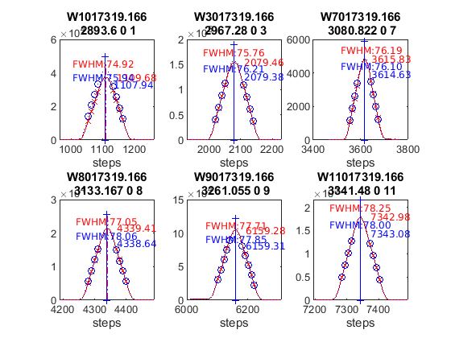 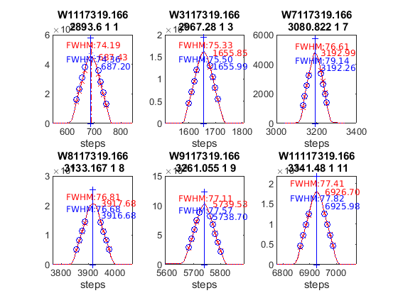 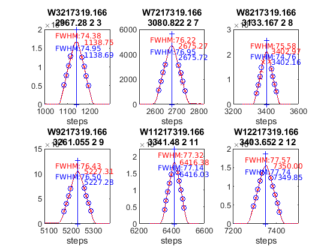 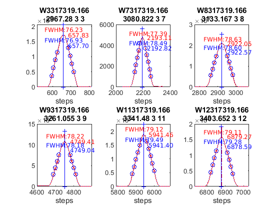 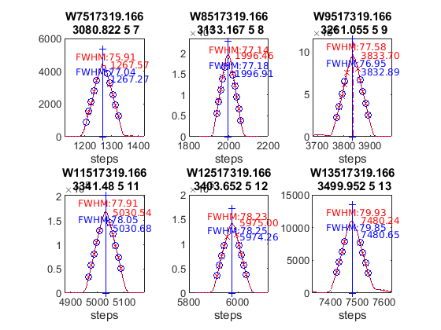 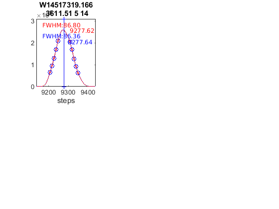 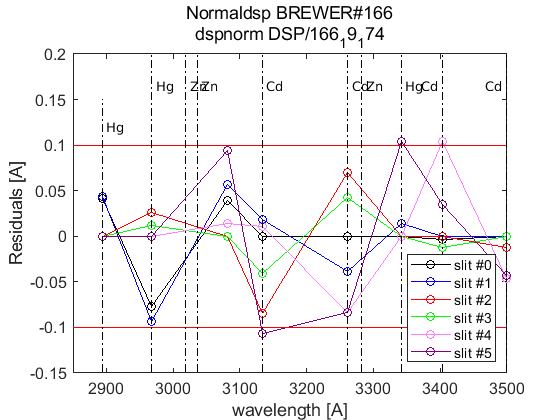 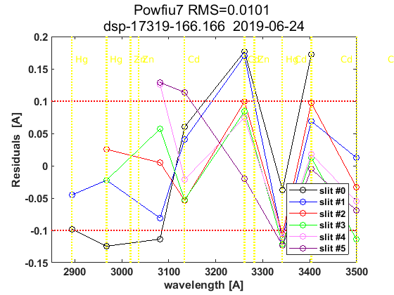 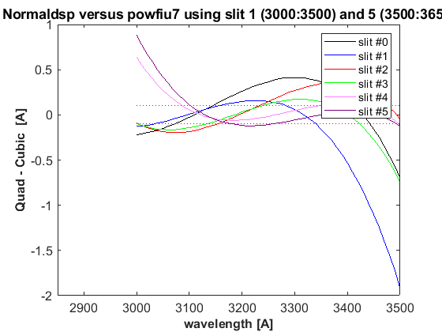

end
load(Cal.file_save,'dsp_summary');
dates=sscanf(cell2str(cat(2,ldsp')),'%03d_%03d_%03d,',[3,Inf]);
dates=datejul(dates(2:3,:)');dates=dates(:,1);
dsp_summary{Cal.n_inst}.info=cellstr(datestr(dates))';
dsp_summary{Cal.n_inst}.res=res;
dsp_summary{Cal.n_inst}.detail=detail;
dsp_summary{Cal.n_inst}.salida=salida;
save(Cal.file_save,'-APPEND','dsp_summary');
ldsp =
4×1 cell array
{'166_13_166'}
{'166_15_152'}
{'166_17_152'}
{'166_19_174'}
ix=sort(findobj('tag','DSP_QUAD_RES'));
printfiles_report(ix',Cal.dir_figs,'aux_pattern',ix);
close all
naux =
1
figura =
'166_figures_DSP_QUAD_RES_1'
naux =
2
figura =
'166_figures_DSP_QUAD_RES_2'
naux =
3
figura =
'166_figures_DSP_QUAD_RES_3'
naux =
4
Tabla - resumen con resultados DSP y Umkehr
QUAD_SUM_table={}; rows={}; tabla_QuadSum={}; format short g;
if config_orig(14)~=config_def(14)
idx=1:length(res)+1;
idx(end-1)=0;
idx(end)=length(res);
for t=[1:length(res)-1,length(res)+1]
tabla_QuadSum{t}=num2cell(round(res{idx(t)}(end-1,:,1)*10^4)/10^4);
end
old_step=num2cell(round(res{length(res)}(res{length(res)}(:,1,1)==config_orig(14),:,1)*10^4)/10^4)
if ~isempty(old_step)
tabla_QuadSum{length(res)}=old_step(1,:);
else
disp('orignal step too far')
tabla_QuadSum{length(res)}= num2cell([config_orig(14),NaN*ones(1,8)]);
end
Q_SUM_table_RowLabels={'Current',dsp_summary{Cal.n_inst}.info{:},dsp_summary{Cal.n_inst}.info{end},'Final'};
else
for t=1:length(res)
tabla_QuadSum{t}=num2cell(round(res{t}(end-1,:,1)*10^4)/10^4);
end
Q_SUM_table_RowLabels={'Current',dsp_summary{Cal.n_inst}.info{:},'Final'};
end
tabla_QuadSum_str=cat(1,tabla_QuadSum{:});
data_ini=cellfun(@(x) (round(x(:,1)*10^4))/10^4,{config_orig(8),config_orig(9),config_orig(10)},'UniformOutput',false);
data_fin=cellfun(@(x) (round(x(:,1)*10^4))/10^4,{config_def(8),config_def(9),config_def(10)},'UniformOutput',false);
QUAD_SUM_table=[{config_orig(14),data_ini{:}}
tabla_QuadSum_str(:,[1 2 4 5])
{config_def(14),data_fin{:}}];
disp([Q_SUM_table_RowLabels',QUAD_SUM_table]);
label_1={'slit\#0','slit\#1','slit\#2','slit\#3','slit\#4','slit\#5'};
UMK_TABLE={};
for um=1:length(res)
steps_umk=res{um}(end-1:end,1,1);
UMK_TABLE{um}=[];
for iumk=1:2
label_2={sprintf('step= %d ',fix(steps_umk(iumk)));'WL(A)';'Res(A)';'O3abs(1/cm)';'Ray abs(1/cm)'};
if iumk==2, dumk=0; else dumk=iumk; end
data=[label_2,[label_1;num2cell([round(detail{um}(1,:,end-dumk,1));detail{um}(2:4,:,end-dumk,1)])]];
UMK_TABLE{um}=[UMK_TABLE{um};data];
end
end
old_step =
1×9 cell array
Columns 1 through 5
{[283]} {[0.3423]} {[11.421]} {[3.1665]} {[1.1464]}
Columns 6 through 9
{[1409.4]} {[0.3531]} {[0.3444]} {[11.039]}
'Current' [283] [0.3425] [ 2.35] [1.1481]
'15-Jun-2013' [283] [0.3436] [ 3.159] [1.1505]
'01-Jun-2015' [283] [0.3427] [3.1567] [1.1493]
'01-Jun-2017' [283] [0.3442] [3.1511] [1.1542]
'23-Jun-2019' [283] [0.3423] [3.1665] [1.1464]
'23-Jun-2019' [286] [0.3391] [3.1914] [ 1.136]
'Final' [286] [0.3432] [ 2.35] [1.1481]
Tablas y ficheros de definiciones latex
indx=1;
for t=1:length(res)
if t==1 indx=[]; else indx=t-1; end
matrix2latex_QDETAIL(QUAD_DETAIL{t},...
fullfile(Cal.file_latex,['table_QDETAIL',num2str(indx),'_',Cal.brw_str{Cal.n_inst},'.tex']),...
'alignment','c','resize',0.9,'size','footnotesize');
matrix2latex_ctable(UMK_TABLE{t},...
fullfile(Cal.file_latex,['table_UMK',num2str(indx),'_',Cal.brw_str{Cal.n_inst},'.tex']),...
'alignment','c','resize',0.9,'size','footnotesize');
end
matrix2latex_ctable(QUAD_SUM_table,fullfile(Cal.file_latex,['table_dsp','_',Cal.brw_str{Cal.n_inst},'.tex']),...
'Columnlabels',{'Calc-step', 'O3abs coeff.', 'SO2abs coeff.', 'O3/SO2'},...
'RowLabels', Q_SUM_table_RowLabels,'alignment', 'c',...
'resize',0.8,'format',{'%d','%6.4f','%6.4f','%6.4f'},'size','footnotesize');
if length(res)>1
d_p=[length(res)-1 length(res)]; tags={'','new'};
else
d_p=1; tags={'new'};
end
idx=1;
for t=d_p
latexcmd(fullfile(Cal.file_latex,['cal_wavelengthDSP',tags{idx},'_',Cal.brw_str{Cal.n_inst}]),...
['\Auno',tags{idx}],round(res{t}(end-1,2,1)*10000)/10000,...
['\Ados',tags{idx}],round(res{t}(end-1,4,1)*10000)/10000,...
['\Atres',tags{idx}],round(res{t}(end-1,5,1)*10000)/10000,...
['\UMKoffset',tags{idx}],fix(res{t}(end,1)));
idx=idx+1;
end
r=cell2mat(res');
r=reshape(r,15,[],9,2);
mq=median(squeeze(r(7,:,:,1)))
mc=round(median(squeeze(r(7,:,:,2)))*10000)/10000
figure;
plot(dates,squeeze(r(7,:,2,1)),'r:o'); hold on
plot(dates,squeeze(r(7,:,2,2)),'b:+')
hline(mq(:,2),'r',sprintf(' %.4f ',mq));
hline(mc(:,2),'b',sprintf(' %.4f ',mc));
legend('quad','cubic')
datetick;
grid
title(Cal.brw_name(Cal.n_inst))
mq =
Columns 1 through 6
283 0.34312 10.834 3.1579 1.1499 1380.1
Columns 7 through 9
0.35376 0.34514 10.457
mc =
Columns 1 through 6
283 0.3414 10.07 3.1693 1.1453 1364.6
Columns 7 through 9
0.3522 0.3435 9.6987
Eto para escribir resultados a hoja excel.
for dsps=1:length(ldsp)
legend1={'step',sprintf('ICF (%d, %d)',CSN_icf{dsps}(1),CSN_icf{dsps}(3)),'abs step','A1 Q','A1 S'};
dsp_table=NaN*ones(9,size(legend1,2));
dsp_table(:,1:5)=[res{dsps}(:,1,1),NaN*ones(9,1),res{dsps}(:,1,1)+salida{dsps}{1}.cal_ozonepos,...
res{dsps}(:,2,1)*10000,res{dsps}(:,2,2)*10000];
dsp_table(end-1,2)=CSN_icf{dsps}(2)*10000; aux=round(dsp_table); aux(:,[2 4 5])=aux(:,[2 4 5])/10000;
aux=[legend1;num2cell(aux)];
cell2str(aux,'\t')
xlswrite('./DSP/dsp_todo.xls',ldsp(dsps),Cal.brw_name{Cal.n_inst},['A',num2str(1+(dsps-1)*11)]);
xlswrite('./DSP/dsp_todo.xls',aux,Cal.brw_name{Cal.n_inst},['B',num2str(1+(dsps-1)*11)]);
end
xlswrite('./DSP/dsp_IZO2.xls',[Q_SUM_table_RowLabels',QUAD_SUM_table],[Cal.brw_name{Cal.n_inst},'_sum']);